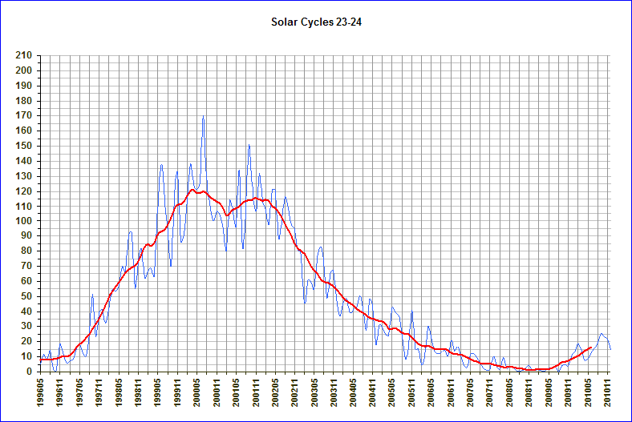
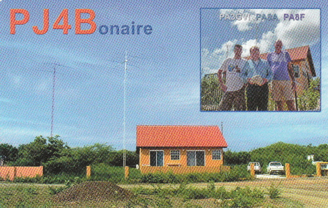

6m Today !

2010年総集編
サイクル24の太陽活動は昨年から徐々に上昇傾向にあるが、相変わらず低調。
予想されている2013年5月頃までにどの程度上昇してくれるか全く予測は困難。
[Back Issues Dec.2010]
TIME:UTC(JST-09:00)
Report from JA1RJU(PM95sq)
31.Dec.2010(15:00c)
VK-TV 04:30 46.172/240 -- VK video with QSB S9 at peak
Report from JA1RJU(PM95sq)
30.Dec.2010(15:00c)
Report from JA1RJU(PM95sq)
29.Dec.2010(15:00c)
12月15日に久しぶりのZLのオープンでコンデションの上昇も期待されたが、JAにオープンがあったのはこの日だけだった。
連日45/46MHz帯のTVのVideoをモニターしていても、この時以来入感の頻度は激減してしまった。
南半球側では今が夏場のEsシーズン真っ盛りで連日Es伝搬でVK/ZLやFK/E51CGなどの近隣のエンティテイーのQSOで賑わっている。
24日にはZL1RSが南米のOA4TTと10,000Kmを超えるQSOに成功している。この距離は、ちょうどわれわれが夏場に経験している"Esのマルチホップ"と同様のパスと思われる。
南半球のアフリカ、南米が相手では、6mのアクティブな局が北半球に比べて極端に少ないのでQSOのチャンスに恵まれていない。
こんな中にあって、ZL/VKからDU(フィリピン)間の伝搬も盛んで、連日の様にVK/ZLの局がDU1GM、DU7/PA0HIPなどとQSOしている。
DUは地図上のエリアでは北半球なのだが、磁気赤道がフィリピン付近で赤道から大きく北側にずれているため、
電波伝搬上では南半球の範疇(はんちゅう)に含まれているのかも知れない。
ZL/VK→DUがオープンしていても、このQSOは伝搬外のJAでは全く聞こえてこない。
サイクル24の活動も徐々に上昇しているとは言え、12月下旬のSSNの平均はまだ20前後。
このSSN値をサイクル23の下降期に当てはめると2005年頃の値となる。
2005年の春、秋のDXシーズンにはVK/ZL、FK8などの、赤道を挟んだ南北のパスは頻繁に見られたが、
東部太平洋から南米などへの横パスは終わっている。この調子では、来る2011年のコンデションが劇的に上昇するとは思えないが、南北のパスからもう少し伝搬のエリアが"扇状"に広がってくれるのを期待したい。

DXCCから消滅扱いとなったNetherlands Antilles
今年のDXCCの話題の中心となったのは、2010年10月10日にカリブ海に点在する「PJ」などのオランダ領のエンテイティーの見直しがあり、DXCCに大きな変更があったこと。
従来のエンティティーの「PJ」は消滅扱いになり、新たに「PJ」の4エンティティーが誕生した。
1982年のPJ9EEや1992年のPJ2/OH1ZAAなど、唯一JAからQSO出来ているPJ2/9(Netherlands Antilles)は消滅扱いとなった。
ただし、6mのDXCCでは消滅エンティティーもDXCCにはカウントする事になっているので、総QSOから減る事はない。
このサイクル24のコンデションでロングパスのカリブ海の伝搬が期待できるかどうか不明だが、もしもオープンする事があったら、PJ2(Curacao)、PJ4(Bonaire)、PJ5/6(Eustatius/Saba)、PJ7(St.Maarten)の4エンティテイーの"NEW"を探そう！？。
|





50MHzでQSO出来るのは...！？
Report from JA1RJU(PM95sq)
28.Dec.2010(15:00c)
Report from JA1RJU(PM95sq)
27.Dec.2010(15:00c)
Report from JA1RJU(PM95sq)
26.Dec.2010(15:00c)
Report from JA1RJU(PM95sq)
25.Dec.2010(15:00c)
Report from JA1RJU(PM95sq)
24.Dec.2010(15:00c)
Report from JA1RJU(PM95sq)
23.Dec.2010(15:00c)
Report from JA1RJU(PM95sq)
22.Dec.2010(15:00c)
Report from JA1RJU(PM95sq)
21.Dec.2010(15:00c)
ZL-TV 02:05-50 45.24/25/260 -- ZL video S5-7
Report from JA1RJU(PM95sq)
20.Dec.2010(15:00c)
Report from JA1RJU(PM95sq)
19.Dec.2010(15:00c)
Report from JA1RJU(PM95sq)
18.Dec.2010(15:00c)
VK-TV 03:45 46.172 -- VK video
Report from JA1RJU(PM95sq)
17.Dec.2010(15:00c)
Report from JA1RJU(PM95sq)
16.Dec.2010(15:00c)
ZL-TV 02:50- 45.24/25/260 -- ZL video
VK-TV 04:30 46.172/240 -- VK video S9
Report from JA1RJU(PM95sq)
15.Dec.2010(15:00c)
ZL-TV 04:00- 45.24/25/260 -- ZL video
ZL-TV 06:35- 45.24/25/26 -- ZL video
VK-TV 06:35 46.172/240 -- VK video
ZL3JT 06:40 50.105 CW
VK4WTN 06:42 50.110 SSB
VK4MA 06:44 50.100 CW
ZL3JT 06:44 50.105 CW @
ZL3NW 06:45 50.105 CW @
VK2ZT 06:51 50.110/140 SSB
VK4WM 06:52 50.110 CW
VK2FAD 06:53 50.140 SSB
ZL3NW 06:56 50.110 CW
VK2ZT 06:59 50.140 SSB @
VK2FAD 07:01 50.140 SSB @
VK4ABW 07:04 50.110 CW
ZL3AAU 07:07 50.160 SSB @
ZL3ADT 07:08 50.160 SSB @
ZL3MF 07:09 50.160 SSB @
ZL3JT 07:10 50.107 CW
VK4WM 07:10 50.110 CW
ZL3NW 07:11 50.110/105 CW CQing 599
VK4WM 07:35 50.102 CW @
午後から久しぶりにZL'sのオープンがあった。
昼過ぎから45MHz帯のZL-TVのVideoの3波が同時に入感しきたが、ZL'sのオープンはここのところ連日QSOが続いているDUが相手。
JAまではコンデションが伸びないまま、45MHz帯のTV-Videoも一旦聞こえなくなった。
今日もオープンのチャンスが無いかのかと諦めかけた3時過ぎになって、珍しくZLとGuamのKG6DXがQSOが始まった。
間もなくJAにも再び45/46MHz帯のZL/VKのTV-Videoが強力に入感し始めた。直後にJAでもZL3JTの信号が入感し始めた。
オープンしたエリアはZL3とVK2が中心だった。同じ時間帯にKG6DXはFK8CPともQSOしていたが、
JAではFK8の信号は確認出来なかった。ZLの信号は07:40z頃にフェードアウトした。ZLの本格的な入感は今季初。
|
Report from JA1RJU(PM95sq)
14.Dec.2010(15:00c)
Report from JA1RJU(PM95sq)
13.Dec.2010(15:00c)
Report from JA1RJU(PM95sq)
12.Dec.2010(15:00c)
Report from JA1RJU(PM95sq)
11.Dec.2010(15:00c)
ZL-TV 03:05- 45.24/25/26 -- ZL video 45.250 S9
01:00z頃にZLと北米本土(K6)とのQSOがリポートされていた。K6QXYとZL1RSでQSO出来た模様だが、
これは今季初めてのF2による太平洋横断の北米ルートのオープンと思われる。
この太平洋方面の伝搬がもう少し活発になると、JA～南米のパスも可能性が出てくるのだが、もう少しの辛抱か？。
ここのところ、この時間帯に連日、ZL/VK～DUのオープンが続いているが、このZLとのコンデションはJAまでは伸びてこない。
今日も正午過ぎから45MHz帯ZLのTV-Videoが入感していたが、信号はあまり上昇しない内にコンデションは落ちてしまった。
|
Report from JA1RJU(PM95sq)
10.Dec.2010(15:00c)
ZL-TV 05:40- 45.24/25/26 -- ZL video
VK-TV 05:30- 46.172 -- VK video S9
Report from JA1RJU(PM95sq)
09.Dec.2010(15:00c)
Report from JA1RJU(PM95sq)
08.Dec.2010(15:00c)
ZL-TV 03:25- 45.24/25/26 -- ZL video 45.250 S5++!!
VK-TV 03:25- 46.172/240 -- VK video
ZL-TV 04:45- 45.24/25/26 -- ZL video still S9!
(ZL2DX 05:22 50.110 CW JA6 QSO=PM53ro (nothing porp to PM95sq)
(ZL7A 06:26 50.117 CW QSO with ZL2DX.ZL3NW...)
正午過ぎから久しぶりに45MHz帯のZL-TVが強力に入感していた。少し遅れて46MHz帯のVK-TVも入感してきたが、
今日はZL-TVの方が強かった。
一時は45.240/250/260MHzの3波がS9+で入感、50MHz帯でのZLの入感が期待された。
同時間帯にはDU～ZL間がFBにオープンしてZL'sとDU7/PA0HIPやDU1GMがQSOしていたが、
JA1(PM95)では両方とも入感しなかった。
05:22zになってZL2DXがJA6(PM53ro)とRST599でQSO出来たとのリポートがあったが、1エリアではZLの信号は確認出来なかった。
JA1エリアでは06:30zにVK/ZLのTV信号は完全にフェードアウトしてしまったが、
この直後にZL2DX.ZL3NWからZL7AとのQSOが報告された。
ZL7A(OP=JF1OCQ)は、ZL7/W1SY(OP=JE1SYN)と共にChatham Is)からDX-Peditionで運用している局で直前までHFにQRVしていた。
この時期、6mでのJAとのオープンは難しいパスと思われているが、
今日のようなパスが続くならオープンの可能性もありそう。
この日、直前までZL'sとQSOしていたDU7/PA0HIPは、
ZLとのコンデションが終わった直後に6mにQRVしてきたZL7AとのQSOを逃し悔しがっていた。
|
Report from JA1RJU(PM95sq)
07.Dec.2010(15:00c)
Report from JA1RJU(PM95sq)
06.Dec.2010(15:00c)
Report from JA1RJU(PM95sq)
05.Dec.2010(15:00c)
11月19日からKermadec IslandでQRVをしているZL8Xは、
HF帯ではJAからも160mから10mまでの9バンドのオールモード(CW/SSB/RTTY)で多くの局がQSOしたが、
6mでのQRVは当初から積極的に行わなかったこともありQSOのリポートは無かった。
南半球は夏のEsシーズンに入り、ZL/VKなどの近場のQSOで賑わっていた。
HF帯でのQSOも一段落した11月後半になって、ZL8Xは6m(50.110MHｚ)でもビーコンを出し始めたものの、
5ELのアンテナは"ZL方面"を向けたまま。
そんな中、11月26日になってZL8Xから6mでの初QSOが1局リポートされた。この幸運な局はZL1RS(CW)だった。
その後、VK/ZLからのリクエストに答えて本腰を上げて？6m(50.110MHz)にQRVしたZL8Xと12月5日現在、
VK.ZL.FK8HAなど4エンティティー、72 QSO(CW.SSB.RTTY)がLOGに記録されている。
5日にはJA局の6mのQSOもクラスターにリポートされていたが、これはQSOの周波数(50.022MHz)から判断して、
この時間帯にHFでQSOした"**.022MHz"の誤入力によるリポートと思われる？。
VKからのリポートでも今のところJA-ZL8のQSOは確認されていない。ZL8Xの予定では12月5日までQRV、7日には同島を離れる予定。
|
Report from JA1RJU(PM95sq)
04.Dec.2010(15:00c)
Report from JA1RJU(PM95sq)
03.Dec.2010(15:00c)
DU7/PA0HIP 02:59 50.110 CW CQ (QSO with VK6)
VK-TV 05:00- 46.172 -- VK video
VK-TV 05:30- 46.240 -- VK video
Report from JA1RJU(PM95sq)
02.Dec.2010(15:00c)
VK6KXW 03:23 50.110 CW CQ beacon 569
VK6KXW 03:46 50.110 SSB @ RS59/55
VK-TV 03:55- 46.240 -- VK video Nill 46.172MHz
VK6KXW 04:06 50.120 SSB CQ Asia
VK6RO 04:11 50.110 CW CQing
Report from JA1RJU(PM95sq)
01.Dec.2010(15:00c)
VK-TV 02:45- 46.172 -- VK video weak
[Back Issues Nov.2010]
TIME:UTC(JST-09:00)
Report from JA1RJU(PM95sq)
30.Nov.2010(15:00c)
Report from JA1RJU(PM95sq)
29.Nov.2010(15:00c)
Report from JA1RJU(PM95sq)
28.Nov.2010(15:00c)
Report from JA1RJU(PM95sq)
27.Nov.2010(15:00c)
Report from JA1RJU(PM95sq)
26.Nov.2010(15:00c)
VK-TV 04:40- 46.172 -- VK video
Report from JA1RJU(PM95sq)
25.Nov.2010(15:00c)
Report from JA1RJU(PM95sq)
24.Nov.2010(15:00c)
DU1GM 07:06 50.105 CW @ FB !
DU1EV/B 07:10- 50.008 CW Beacon
Report from JA1RJU(PM95sq)
23.Nov.2010(15:00c)
VK-TV 03:35- 46.172 -- VK video
Report from JA1RJU(PM95sq)
22.Nov.2010(15:00c)
Report from JA1RJU(PM95sq)
21.Nov.2010(15:00c)
VK-TV 03:40- 46.172 -- VK video
VK-TV 06:00- 46.172 -- VK video strong !
(FK1TK 06:25 50.110 SSB JA3)
Report from JA1RJU(PM95sq)
20.Nov.2010(15:00c)
VK-TV 03:35- 46.172 -- VK video
Report from JA1RJU(PM95sq)
19.Nov.2010(15:00c)
Report from JA1RJU(PM95sq)
18.Nov.2010(15:00c)
Report from JA1RJU(PM95sq)
17.Nov.2010(15:00c)
VK-TV 04:00- 46.172 -- VK video weak
Report from JA1RJU(PM95sq)
16.Nov.2010(15:00c)
VK-TV 05:00- 46.172 -- VK video strong!
VK4MA 05:16 50.130 SSB
VK4WM 05:16 50.139 SSB
VK4BG 05:17 50.160 SSB
Report from JA1RJU(PM95sq)
15.Nov.2010(15:00c)


2日間の特別免許で運用、7月18日に日本にも入感したHS0ACのQSL。QSLはHS0ZFZへ
11/5～11/9開催のSEANET CONVENTION・上海に参加していたQSL・MGRのHS0ZFZ(左)と
Report from JA1RJU(PM95sq)
14.Nov.2010(15:00c)
VK-TV 04:25- 46.172 -- VK video strong!
VK-TV 04:25- 46.240 -- VK video weak
VK4ZJB 04:43 50.110 CW CQ weak
Report from JA1RJU(PM95sq)
13.Nov.2010(15:00c)
VK-TV 03:57- 46.172 -- VK video
VK6JQ 08:57 50.110 CW
Report from JA1RJU(PM95sq)
12.Nov.2010(15:00c)
Report from JA1RJU(PM95sq)
11.Nov.2010(15:00c)
DU7/PA0HIP 07:05 50.105 CW CQ
DU1EV/B 07:17- 50.008 CW Beacon
DU7/PA0HIP 07:24 50.105 CW @
Report from JA1RJU(PM95sq)
10.Nov.2010(15:00c)
VK-TV 05:30- 46.172 -- VK video
DU7/PA0HIP 05:48 50.110 CW CQ
VK4BLK 06:09 50.110 CW CQ
VK4FNQ 06:10 50.110/160 SSB CQ
VK4BLK 06:12 50.110 CW @
DU7/PA0HIP 06:18 50.105 CW CQ
VK4EK 06:26 50.110 CW CQ
VK4BKP 06:30 50.110 SSB CQ
Report from JA1RJU(PM95sq)
05-09.Nov.2010(15:00c)
◎11/5～11/9のリポートの更新は休止します。
(38th SEANET CONVETION 2010= Shanghai, China)
Report from JA1RJU(PM95sq)
04.Nov.2010(15:00c)
VK-TV 07:05- 46.172/240 -- VK video weak
Report from JA1RJU(PM95sq)
03.Nov.2010(15:00c)
VK-TV 03:55- 46.172 -- VK video
Report from JA1RJU(PM95sq)
02.Nov.2010(15:00c)
VK-TV 03:30- 46.172 -- VK video
VK-TV 05:05- 46.240 -- VK video weak
Report from JA1RJU(PM95sq)
01.Nov.2010(15:00c)
VK-TV 06:10- 46.172 -- VK video strong!
[Back Issues Oct.2010]
TIME:UTC(JST-09:00)
Report from JA1RJU(PM95sq)
31.Oct.2010(15:00c)
VK-TV 03:40- 46.172/240 -- VK video
Report from JA1RJU(PM95sq)
30.Oct.2010(15:00c)
DU7/PA0HIP 06:25 50.110 CW CQ CQ 599
DU1EV/B 07:00- 50.008 CW Beacon strong!
DU7/PA0HIP 07:10 50.110 CW still 599
Report from JA1RJU(PM95sq)
29.Oct.2010(15:00c)
VK-TV 05:20- 46.172 -- VK video weak
Report from JA1RJU(PM95sq)
28.Oct.2010(15:00c)
9M2TO 07:42 50.117 CW CQ 539
Report from JA1RJU(PM95sq)
27.Oct.2010(15:00c)
VK-TV 03:35- 46.172 -- VK video
Report from JA1RJU(PM95sq)
26.Oct.2010(15:00c)
Report from JA1RJU(PM95sq)
25.Oct.2010(15:00c)
VK-TV 03:05- 46.172 -- VK video
Report from JA1RJU(PM95sq)
24.Oct.2010(15:00c)
Report from JA1RJU(PM95sq)
23.Oct.2010(15:00c)
VK-TV 03:20- 46.172 -- VK video
Report from JA1RJU(PM95sq)
22.Oct.2010(15:00c)
VK-TV 04:10- 46.172 -- VK video
DU1EV/B 06:21- 50.008 CW Beacon
Report from JA1RJU(PM95sq)
21.Oct.2010(15:00c)
VK-TV 03:30- 46.172 -- VK video strong!
DU1EV/B 05:45- 50.008 CW Beacon 599
DU1IST 05:54 50.125 CW @ FB 599!
DU1EV/B 07:00- 50.008 CW Beacon still good 599
Report from JA1RJU(PM95sq)
20.Oct.2010(15:00c)
Report from JA1RJU(PM95sq)
19.Oct.2010(15:00c)
VK-TV 03:15- 46.172 -- VK video strong!
DU1EV/B 05:30- 50.008 CW Beacon 599
DU7/PA0HIP 06:47 50.110 CW @ ( He had thunderstorms, 6m antennas broken.
now matched a 40m dipole on 6m!)
DU1EV/B 07:00- 50.008 CW Beacon still 599
Report from JA1RJU(PM95sq)
18.Oct.2010(15:00c)
Report from JA1RJU(PM95sq)
17.Oct.2010(15:00c)
DU7/PA0HIP 07:25 50.105 CW CQ CQ 599
DU7/PA0HIP 07:33 50.110 CW
DU1EV/B 08:05- 50.008 CW Beacon
Report from JA1RJU(PM95sq)
16.Oct.2010(15:00c)
9M4CBP 08:04 50.110 SSB @ OP.9M6XRO (53rd World Scout Jamboree)
Report from JA1RJU(PM95sq)
15.Oct.2010(15:00c)
VK-TV 03:10- 46.172 -- VK video weak
VK8RAS/b 05:26- 50.047 CW Beacon 569
DU7/PA0HIP 05:48 50.105 CW CQ CQ 599
DU1EV/B 06:35- 50.008 CW Beacon 599
VK6RSX/b 06:38- 50.304 CW Beacon 569
VK6RSX/b 07:03- 50.304 CW Beacon 599!
Report from JA1RJU(PM95sq)
14.Oct.2010(15:00c)
VK-TV 06:10- 46.172 -- VK video
Report from JA1RJU(QM06cb)
13.Oct.2010(15:00c)
DU7/PA0HIP 07:51 50.110 CW CQ CQ 599
Report from JA1RJU(QM06cb)
12.Oct.2010(15:00c)
Report from JA1RJU(PM95sq)
11.Oct.2010(15:00c)
VK-TV 03:54- 46.172 -- VK video
VK8RAS/b 04:45- 50.047 CW Beacon 599
VK6RSX/b 05:05- 50.304 CW Beacon 599
VK6KXW 05:14 50.118 SSB @ RS57 IC-7700 200W
VK6RSX/b 07:48- 50.304 CW Beacon still open 569
Report from JA1RJU(PM95sq)
10.Oct.2010(15:00c)
VK-TV 03:50- 46.172 -- VK video
VK4EK 04:55 50.110 SSB
VK4BLK 05:20 50.110 CW
DU1EV/B 08:40- 50.008 CW Beacon
DU1GM 08:42 50.101 CW
DU7/PA0HIP 08:50 50.115 CW
N7ET/DU7 08:51 50.112 CW
Report from JA1RJU(PM95sq)
09.Oct.2010(15:00c)
DU7/PA0HIP 09:27 50.110 CW CQ CQ
DU7/PA0HIP 09:45 50.110 CW CQ 599!
DU1EV/B 10:05- 50.008 CW Beacon 599
DU7/PA0HIP 10:13 50.105 CW still 599
Report from JA1RJU(PM95sq)
08.Oct.2010(15:00c)
VK-TV 03:20- 46.172 -- VK video S6 QSB
VK-TV 05:40- 46.172 -- VK video weak again.
DU7/PA0HIP 06:55 50.105 CW CQ CQ 599
Report from JA1RJU(PM95sq)
07.Oct.2010(15:00c)
VK-TV 03:22- 46.172 -- VK video S5
Report from JA1RJU(PM95sq)
06.Oct.2010(15:00c)
DU7/PA0HIP 06:45 50.110 CW CQ CQ 599
DU7/PA0HIP 06:54 50.110 CW @
Report from JA1RJU(PM95sq)
05.Oct.2010(15:00c)
Report from JA1RJU(PM95sq)
04.Oct.2010(15:00c)
Report from JA1RJU(PM95sq)
03.Oct.2010(15:00c)
VK-TV 06:14- 46.172 -- VK video S5
DU1EV/B 08:50- 50.008 CW Beacon
Report from JA1RJU(PM95sq)
02.Oct.2010(15:00c)
◎FEDXP・創立50周年記念祝会(東京)
Report from JA1RJU(PM95sq)
01.Oct.2010(15:00c)
VK-TV 03:35- 46.172 -- VK video S9
VK4EK 04:35 50.110 CW/SSB @
VK4BLK 04:58 50.110/145 SSB
VK8RAS/b 05:03- 50.047 CW Beacon
VK4ABW 05:52 50.110 SSB 59
VK4EK 05:55 50.110 SSB CQ
[Back Issues Sep.2010]
TIME:UTC(JST-09:00)
Report from JA1RJU(PM95sq)
30.Sep.2010(15:00c)
Report from JA1RJU(PM95sq)
29.Sep.2010(15:00c)
Report from JA1RJU(PM95sq)
28.Sep.2010(15:00c)
VK-TV 05:10- 46.172/240 -- VK video
VK8RAS/b 06:05- 50.047 CW Beacon
DU7/PA0HIP 08:20 50.110 CW CQ 599
DU1EV/B 08:20- 50.008 CW Beacon
DU1GM 08:56 50.107 CW
Report from JA1RJU(PM95sq)
27.Sep.2010(15:00c)
Report from JA1RJU(PM95sq)
26.Sep.2010(15:00c)
Report from JA1RJU(PM95sq)
25.Sep.2010(15:00c)
Report from JA1RJU(PM95sq)
24.Sep.2010(15:00c)
VK-TV 03:55- 46.172 -- VK video
Report from JA1RJU(PM95sq)
23.Sep.2010(15:00c)
VK-TV 05:35- 46.172 -- VK video
VK4FNQ 05:57 50.130 SSB @ RS 59+!
VK4ABW 06:02 50.110 SSB CQ
VK4BLK 06:03 50.110 CW @
VK4EK 06:09 50.110 CW CQ
VK4CI 06:11 50.110 CW @
VK4FNQ 06:19 50.110 SSB CQ
VK4BLK 06:20 50.110 CW CQ
VK4BLK 06:36 50.110 CW CQ (06:40z F.out)
Report from JA1RJU(PM95sq)
22.Sep.2010(15:00c)
VK8MS 11:05 50.110 SSB
Report from JA1RJU(PM95sq)
21.Sep.2010(15:00c)
VK-TV 04:50- 46.172 -- VK video S9 qsb.
VK-TV 05:20- 46.240 -- VK video weak
Report from JA1RJU(PM95sq)
20.Sep.2010(15:00c)
Report from JA1RJU(PM95sq)
19.Sep.2010(15:00c)
Report from JA1RJU(PM95sq)
18.Sep.2010(15:00c)
AH2G/B 08:55- 50.0045 CW Beacon weak
VK8MS 12:54 50.110 SSB weak
Report from JA1RJU(PM95sq)
17.Sep.2010(15:00c)
Report from JA1RJU(PM95sq)
16.Sep.2010(15:00c)
VK-TV 05:50- 46.172 -- weak VK video.
VK-TV 07:25- 46.172 -- VK video S6-7.
VK8MS 12:20 50.110 CW/SSB
VK6RSX/b 12:45- 50.304 CW Beacon
VK8MS 13:00 50.130 CW
Report from JA1RJU(PM95sq)
15.Sep.2010(15:00c)
(VK6RSX/b 10:19- 50.304 CW Beacon JA3)
Report from JA1RJU(PM95sq)
14.Sep.2010(15:00c)
VK-TV 06:10- 46.172 -- VK video 1st open !?
日本時間の15:10分頃から46.172MHzのVK-TVの入感が確認された。
信号はピークでS-5程度で弱いものだったが、今季初の46MHz帯のTV-videoの入感と思われる。
ここのところ日中の28MHz帯でVK'sが頻繁に入感しており、
ハイバンドの南半球のコンデションの上昇が認められていた。50MHz帯でのVK'sのオープンも近い？。
|
Report from JA1RJU(PM95sq)
13.Sep.2010(15:00c)
Report from JA1RJU(PM95sq)
12.Sep.2010(15:00c)
Report from JA1RJU(PM95sq)
11.Sep.2010(15:00c)
BV2YA/b 09:25- 50.001 CW Beacon
Report from JA1RJU(PM95sq)
10.Sep.2010(15:00c)
Report from JA1RJU(PM95sq)
09.Sep.2010(15:00c)
Report from JA1RJU(PM95sq)
08.Sep.2010(15:00c)
DU7/PA0HIP 08:03 50.110 CW CQ 599
DU7/PA0HIP 08:55 50.110 CW CQ still 599
DU1EV/B 09:00- 50.008 CW Beacon
DU1GM 09:20 50.103 CW
Report from JA1RJU(PM95sq)
07.Sep.2010(15:00c)
Report from JA1RJU(PM95sq)
06.Sep.2010(15:00c)
Report from JA1RJU(PM95sq)
04-05.Sep.2010(15:00c)
◎ 9/04-05のりポートは休止します(第39回東北・6SG meeting)。
Report from JA1RJU(PM95sq)
03.Sep.2010(15:00c)
Report from JA1RJU(PM95sq)
02.Sep.2010(15:00c)
Report from JA1RJU(PM95sq)
01.Sep.2010(15:00c)
DU1EV/B 10:40- 50.008 CW Beacon
[Back Issues Aug.2010]
TIME:UTC(JST-09:00)
Report from JA1RJU(PM95sq)
31.Aug.2010(15:00c)
BV2YA/b 08:45- 50.001 CW Beacon
(JA6YBR/b 08:45- 50.017 CW Beacon Miyazaki)
(JR6YAG/b 08:45- 50.038 CW Beacon Okinawa)
BV2YA/b 13:30- 50.001 CW Beacon
Report from JA1RJU(PM95sq)
30.Aug.2010(15:00c)
DU1EV/B 09:30- 50.008 CW Beacon
Report from JA1RJU(PM95sq)
29.Aug.2010(15:00c)
Report from JA1RJU(PM95sq)
28.Aug.2010(15:00c)
Report from JA1RJU(PM95sq)
27.Aug.2010(15:00c)
DU7/PA0HIP 10:12 50.110 CW CQ
Report from JA1RJU(PM95sq)
26.Aug.2010(15:00c)
BV2YA/b 02:45- 50.001 CW Beacon
BV2YA/b 07:40- 50.001 CW Beacon
(JR6YAG/b 08:55- 50.038 CW Beacon Okinawa)
DU1EV/B 09:14- 50.008 CW Beacon
DU7/PA0HIP 09:45 50.105 CW CQ 599
Report from JA1RJU(PM95sq)
25.Aug.2010(15:00c)
Report from JA1RJU(PM95sq)
24.Aug.2010(15:00c)
Report from JA1RJU(PM95sq)
23.Aug.2010(15:00c)
BV2YA/b 05:00- 50.001 CW Beacon
(JR6YAG/b 05:00- 50.038 CW Beacon Okinawa)
Report from JA1RJU(PM95sq)
22.Aug.2010(15:00c)
◎ 2010 The Amateur Radio Festival(東京ビッグサイト西2ホール)
21.Aug.2010(15:00c)
◎ 2010 The Amateur Radio Festival(東京ビッグサイト西2ホール)


《写真右：6mのEMEでQSOしているK7BV/1・Dennisと》
Report from JA1RJU(PM95sq)
20.Aug.2010(15:00c)
BV2YA/b 03:50- 50.001 CW Beacon
BV2YA/b 08:18- 50.001 CW Beacon
Report from JA1RJU(PM95sq)
19.Aug.2010(15:00c)
◎ 今週末(8/21-22日)はいよいよハムフェア2010が始まる。


今年も恒例のDXCCの"フィールドチェック"が、巣鴨のJARL事務局(3F・会議室)で始まった。
事務局での申請受付は8/19-20日の両日で、ハムフェアの会期中の8/21-22日の両日は有明の会場で行われる。
今年はARRLからKX9X・ショーン・クスコ氏が初めて来日してJARLの担当者を補佐してチェック作業を行う。
《 写真：事務局でのフィールドチェックの模様。右は初来日のKX9X・Sean Kutzko氏 》
|
Report from JA1RJU(PM95sq)
18.Aug.2010(15:00c)
BV2YA/b 02:50- 50.001 CW Beacon
BU2AV 04:59 50.113 CW CQ
BV2YA/b 06:20- 50.001 CW Beacon
BT4EXPO 10:15 50.120 CW QSL via BA4EC (direct)
Report from JA1RJU(PM95sq)
17.Aug.2010(15:00c)
BV2YA/b 08:45- 50.001 CW Beacon
DU1EV/B 08:45- 50.008 CW Beacon
DU1EV/B 09:20- 50.008 CW Beacon strong!
Report from JA1RJU(PM95sq)
16.Aug.2010(15:00c)
BV2YA/b 07:55- 50.001 CW Beacon
(JA6YBR/b 07:55- 50.017 CW Beacon Miyazaki)
Report from JA1RJU(PM95sq)
15.Aug.2010(15:00c)
BV2YA/b 04:40- 50.001 CW Beacon
Report from JA1RJU(PM95sq)
14.Aug.2010(15:00c)
XV9DT 01:53 50.098 CW CQ
Report from JA1RJU(PM95sq)
13.Aug.2010(15:00c)
BV2YA/b 08:20- 50.001 CW Beacon
BV2YA/b 13:43- 50.001 CW Beacon
Report from JA1RJU(PM95sq)
12.Aug.2010(15:00c)
Report from JA1RJU(PM95sq)
11.Aug.2010(15:00c)
BV2YA/b 06:35- 50.001 CW Beacon
Report from JA1RJU(PM95sq)
10.Aug.2010(15:00c)
BV2YA/b 05:00- 50.001 CW Beacon
BV2YA/b 08:58- 50.001 CW Beacon
Report from JA1RJU(PM95sq)
06-09.Aug.2010(15:00c)
◎8/6～8/9日のDX Reportは休止します(Guangzhou China FCC Exam Session)
Report from JA1RJU(PM95sq)
05.Aug.2010(15:00c)
DU1EV/B 01:25- 50.008 CW Beacon
Report from JA1RJU(PM95sq)
04.Aug.2010(15:00c)
Report from JA1RJU(PM95sq)
03.Aug.2010(15:00c)
Report from JA1RJU(PM95sq)
02.Aug.2010(15:00c)
(JA6YBR/b 00:50- 50.017 CW Beacon Miyazaki)
BV2YA/b 01:12- 50.001 CW Beacon
Report from JA1RJU(PM95sq)
01.Aug.2010(15:00c)
XV9DT 03:12 50.098 CW CQ
BV2YA/b 04:20- 50.001 CW Beacon
XV9DT 04:20 50.098 CW CQ still good
BV2YA/b 08:20- 50.001 CW Beacon
HL1IBG 08:25 50.091 CW CQ
[Back Issues Jul.2010]
TIME:UTC(JST-09:00)
Report from JA1RJU(PM95sq)
31.Jul.2010(15:00c)
Report from JA1RJU(PM95sq)
30.Jul.2010(15:00c)
Report from JA1RJU(PM95sq)
29.Jul.2010(15:00c)
XV9DT 06:59 50.098 CW CQ
HL3EGX 08:22 50.100 SSB
Report from JA1RJU(PM95sq)
28.Jul.2010(15:00c)
Report from JA1RJU(PM95sq)
27.Jul.2010(15:00c)
BV2YA/b 04:30- 50.001 CW Beacon
JT1FDB/7 04:35 50.101 CW
JT1FDB/7 05:02 50.101 CW CQ
Report from JA1RJU(PM95sq)
26.Jul.2010(15:00c)
Report from JA1RJU(PM95sq)
25.Jul.2010(15:00c)
JI1LET/JD1 05:55 50.210 SSB
JT1FDB/7 07:20 50.101 CW
--------------------------------------------------
KL7RRC/P 2228Z 50125.6 499 on Big Buzz JL8GFB-#
KL7RRC/P 2239Z 50125.6 CW CQ 599 QSB JH7XRZ-#
KL7RRC/P 2246Z 50125.6 CQing JA7QVI
--------------------------------------------------
Report from JA1RJU(PM95sq)
24.Jul.2010(15:00c)
BV2YA/b 00:40- 50.001 CW Beacon
BV4VR 02:50 50.105 CW CQ
JT1FDB/7 02:57 50.101 CW CQ
Report from JA1RJU(PM95sq)
23.Jul.2010(15:00c)
JT1FDB/7 00:50 50.101 CW CQ
JT1FDB/7 01:43 50.101 CW CQ again
(JA6YBR/b 03:00- 50.017 CW Beacon Miyazaki)
JT1FDB/7 03:28 50.101 CW CQ again FB!
(OH0/DK1MAX 05:24- 50.098 CW JA8.7.6.5.3.2.9.0) 80W!
OH0/DK1MAX 06:32-43 50.098 CW open to JA1 UP1 (37 JA's QSO!)
JT1FDB/7 07:11 50.101 CW CQ again (no SSB QRV)
ES6RQ 07:17 50.088 CW @ FB sig!
--------------------------------------------------
OH2LE 0509Z 50081.0 tnx fer call ! JL8GFB-#
OH0/DK1MAX 0521Z 50098.0 TNX NEW 1 JA5QJD
OH0/DK1MAX 0528Z 50098.0 CQ JA building JL8GFB-#
OH0/DK1MAX 0538Z 50098.0 Tnx new JR4ABB
OH1XX 0553Z 50101.0 599 CQing JL8GFB-#
OH0/DK1MAX 0557Z 50098.0 Peak 559 FB JR2HCB
ES6EQ 0601Z 50088.0 CQing build JL8GFB-#
OH7HXH 0606Z 50083.5 CQ CQ 559 JL8GFB-#
ES6RQ 0610Z 50088.0 559>PM51 JE6AZU-#
SM1TDE 0610Z 50095.0 CQ JL8GFB-#
OH4MDY 0614Z 50090.8 weak CQ JL8GFB-#
UX0UN 0619Z 50090.0 599 CQ JL8GFB-#
OH1ND 0644Z 50105.0 strong JL8GFB-#
SM4DHF 0653Z 50103.0 PM85JH<>JO79SG FB JG2AJK
OH7PI 0658Z 50097.6 579 CQ JR2HCB
SM5FUG 0714Z 50081.0 tnx call JL8GFB-#
--------------------------------------------------
Report from JA1RJU(PM95sq)
22.Jul.2010(15:00c)
BV2YA/b 06:00- 50.001 CW Beacon
VR2SIX/b 06:00- 50.075 CW Beacon
--------------------------------------------------
SM7GVF 0605Z 50100.5 599 JL8GFB-#
OH0/DK1MAX 0607Z 50098.0 tnx 599/599 JL8GFB-#
JT1FDB/7 0611Z 50101.0 cq .. JE7ETY
SM7GVF 0628Z 50100.5 SIG up JR4ABB
SM7GVF 0631Z 50100.4 tnx! 559 Cfm JH8LLE-#
ES4EQ 0644Z 50081.0 579 JL8GFB-#
PA2M 0658Z 50083.0 CQING JA JA3EGE
JT1FDB/7 0658Z 50101.0 599 but lonely JL8GFB-#
ON4GB 0658Z 50073.0 CQ JA3EGE
PA2M 0700Z 50083.0 FBsigs QSB JA4FM
--------------------------------------------------
Report from JA1RJU(PM95sq)
21.Jul.2010(15:00c)
--------------------------------------------------
N7NW 0019Z 50097.0 hear weak CQing JL8GFB
VE7SL 0043Z 50110.3 CQing 599 Band still opening JL8GFB-#
VE7SL 0055Z 50095.0 CQ 559 QSB JH7XRZ-#
VE7SL 0108Z 50110.0 SSB 59 JH7XRZ-#
K6FV/B 0118Z 50068.9 Beacon in QM09 JH7XRZ-#
VE7FG 0122Z 50033.0 Beacon JH7XRZ-#
BA4T 0132Z 50097.0 CQ NA JM1TWR-#
KE7V 0155Z 50097.0 CQ 559 QSB JH7XRZ-#
VE7SL 0200Z 50110.0 Tnx CQn JQ2QHQ-#
--------------------------------------------------
XV9DT 08:54 50.098 CW CQ UP1
BV2YA/b 09:27- 50.001 CW Beacon
DU1EV/B 09:27- 50.008 CW Beacon
Report from JA1RJU(PM95sq)
20.Jul.2010(15:00c)
JT1FDB/7 00:45 50.101 CW @ name Frank (QSL via DD0CW)
JT1FDB/7 05:45 50.101 CW again!
JT1FDB/7 06:11 50.101 CW CQ again!
BA4T 06:16 50.101 CW QSO with JT1
JT1FDB/7 06:56 50.103 CW CQ again!
JT1FDB/7 08:05 50.101 CW CQ again!
◎ = 177 DX stations worked on 6m by HS0AC during CQWW VHF contest =
1979-80年のHS1WRの運用以来、長年6mバンドのQRVが制限されていたタイ国(HS)で、
先週末のCQWW VHF Contestに限定免許で6mが許可され運用したRASTのクラブ局・HS0ACと日本からも多くの局がQSOできた。
RASTのHS0ZDX・Tonyからの報告によると、HS0ACは7月18日に運用されベトナム(XV)、中国(BA/BD)、香港(VR2)、
日本(JA)などと合計177局とCWでQSOできたとのこと。
HS0ACはYAESUのFT-736-Rの10W出力に、自作の3EL・Yagiを使い、HS2JFW・Joeによって運用された。
QSLはHS0ZFZ。
-------------------------------------------------------------------
The Radio Amateur Society of Thailand's club station, HS0AC,
operating in the 6-metre (50-MHz) band for the first time in almost two decades and running just 10 watts to a three element homebrew Yagi antenna,
made a total of 177 DX contacts outside Thailand during the CQWW VHF contest on July 18, 2010.
The operator was Joe, HS2JFW, who entered the contest in the single operator, single band category,
and this marked special authorisation for HS0AC to operate on 6-metres by
Thailand's National Telecommunications Commission (NTC) following a formal request from RAST.
The countries worked were Vietnam, China, Japan and Hong Kong and many reports received from the DX stations were 599.
Propagation was thought to be Sporadic-E.
The transceiver used was a Yaesu FT-736-R while the antenna was a home-brew three-element Yagi array .
RAST hopes that the NTC will sanction future requests to operate on the 6-metre band and that
eventually full access will be granted to the band in Thailand.
Tony, HS0ZDX
RAST International Liaison Officer
-------------------------------------------------------------------
|
Report from JA1RJU(PM95sq)
19.Jul.2010(15:00c)
ES6RQ 05:58 50.088 CW
OH3XA 06:04 50.101 CW
ES6RQ 06:40 50.088 CW good sig, big pile!
ES4EQ 07:17 50.083 CW
OH7HXH 07:19 50.0845 CW
OH2MA 07:35 50.091 CW
OH7PI 07:42 50.0716 CW good sig!
ES6RQ 07:47 50.088 CW 4X6el full elevation for EME.
BA4T 08:54 50.097 CW
--------------------------------------------------
ES6RQ 0545Z 50087.0 TNX CALL MY CQ 6M OPEN JH0RNN
OH3XR 0609Z 50092.0 CQ JA5AUC
OH3XR 0639Z 50092.0 559 qsb JH0BQX-#
ES4EQ 0648Z 50083.0 tnx AL cq cq JA5AUC
OZ1LO 0657Z 50085.5 CQ CQ JG1LKO-#
OZ4LP 0658Z 50086.7 JH0INP
OH7PI 0701Z 50072.5 cq.. JE7ETY
OH7HXH 0711Z 50084.4 JH0BQX-#
ES6RQ 0713Z 50088.0 signal up 599 now JH0BQX-#
OH7PI 0715Z 50071.7 good signal JF2TAR
SM2SUM 0727Z 50096.0 599 JL8GFB-#
ES4EQ 0728Z 50082.8 JH0BQX-#
OH7HXH 0730Z 50084.3 JH0INP
OH2MA 0731Z 50091.0 JH4CPC-#
EA1TRY 0732Z 50078.0 cq JI8ALC
OH2MA 0735Z 50091.2 JA5AUC
OH7PI 0738Z 50071.6 JH0INP
OH2MA 0731Z 50091.0 JH4CPC-#
OH1ND 0741Z 50102.2 TNX JA5AUC
SM2SUM 0744Z 50095.9 cq JA8ISU-#
OH1ND 0758Z 50102.2 CQ JE6AZU-#
SM2GCQ 0807Z 50087.6 CQ CQ JL8GFB-#
OH1XX 0812Z 50096.9 TNX HANNU JA5AUC
OH1XT 0819Z 50089.0 559 into PM51 JE6AZU-#
UX7LT 0826Z 50081.8 tnx JA7WSZ
OH1ND 0828Z 50102.0 cq JA8ISU-#
OH1XT 0831Z 50088.9 cq JA8ISU-#
--------------------------------------------------
Report from JA1RJU(PM95sq)
18.Jul.2010(15:00c)
XV9DT 01:15 50.098 CW CQ TEST OL21
HS0AC 01:40 50.100 CW TEST OK03
BG7NFM 02:13 50.100 CW calling HS0
VR2SIX/b 02:13 50.075 CW Beacon weak
XV9DT 02:20 50.098 CW CQ TEST
HS0AC 04:06 50.100 CW @ TEST 599 OK03
HS0AC 04:50 50.100 CW still good !
VR2XLN 05:05 50.104 CW CQ TEST
BA4TB 05:07 50.108 CW CQ
VR2XMT 05:08 50.115 SSB CQ
VR2SIX/b 05:10- 50.075 CW Beacon
XV9DT 05:15 50.098 CW CQ TEST
BG5CGH 06:05 50.100 CW TEST PL09
VR2XMT 06:30 50.090 RTTY CQ CQ 599
LA5UF 07:08 50.090 CW UP1
SM2SUM 07:16 50.0895 CW
OH6WD 07:38 50.090 CW
BA4SI 07:44 50.103 CW CQ
SM7GVF 07:52 50.0878 CW
ES6RQ 07:58 50.088 CW big pile!
--------------------------------------------------
LA5UF 0647Z 50090.0 599 JL8GFB-#
LA5UF 0654Z 50090.0 JH0INP
LA5UF 0656Z 50090.0 UP1 JF1RYU
OZ1LO 0706Z 50080.2 JH0INP
SM7FJE 0724Z 50074.0 JH0INP
SM7GVF 0725Z 50087.0 JA5AUC
OH6WD 0728Z 50090.0 cq JA8ISU-#
C4N 0746Z 50100.0 QM09 JA7GYP-#
ES6RQ 0758Z 50088.0 JA2FTL-#
UT1I 0836Z 50096.0 cq contst JH7MQU
UR7D 0851Z 50090.0 JH0INP
--------------------------------------------------
Report from JA1RJU(PM95sq)
17.Jul.2010(15:00c)
BV2YA/b 02:00- 50.001 CW Beacon
BV2DQ 02:47 50.120 CW @ CQ
BV2DQ 02:59 50.120 SSB CQ
BU2AW 03:00 50.115 CW
BA5DX 03:02 50.105 CW @
BV2NT 03:10 50.115 SSB CQ
VR2SIX/b 03:15- 50.075 CW Beacon
(JA6YBR/b 03:15- 50.017 CW Beacon Miyazaki)
BX2AAL 03:22 50.130 SSB
BU2AW 03:28 50.115 SSB OP.Kamiyama san
BA8BA 05:34 50.097 CW CQ
BA4SI 05:40 50.102 CW CQ
BY8AC 05:44 50.105 CW CQ
9M6YBG 05:57 50.100 CW
XV9DT 05:58 50.098 CW CQ
VR2XMT 07:11 50.115 SSB
LZ2SC 07:22 50.085 CW
A92IO 08:36 50.107 CW CQ
XV9DT 08:47 50.098 CW CQ UP
--------------------------------------------------
YU7AR 0556Z 50099.5 barely hrd piece of CQing JL8GFB-#
UT4UO 0620Z 50102.0 CQing weak JE6AZU-#
YT1QQ 0645Z 50084.0 CQing on top of JA7 JL8GFB-#
HA8IH 0703Z 50086.0 TNX QSO ANTAL JA5AUC
HA8FK 0715Z 50080.0 tnx qso JE7ETY
OE4VIE 0715Z 50083.0 559 JE6AZU-#
LZ2SC 0718Z 50085.0 CQ JL8GFB-#
YT1QQ 0725Z 50086.0 TNX JA5AUC
ER1LW 0737Z 50096.5 TNX LYSY JA5AUC
YO9HP 0740Z 50082.2 cq JE7ETY
9A8A 0759Z 50090.3 559 into PM51 JE6AZU-#
A92IO 0800Z 50107.0 CW JF2MBF
A92IO 0804Z 50107.0 tks JA7GYP-#
A92IO 0810Z 50107.0 UP JA6WJL-#
LZ1QI 0812Z 50105.0 PETKO JA5AUC
YO9HP 0813Z 50082.0 JA6WJL-#
PA2M 0830Z 50081.0 559 JE6AZU-#
--------------------------------------------------
Report from JA1RJU(PM95sq)
16.Jul.2010(15:00c)
◎ = Thai hams authorised to use 6-metres during CQWW VHF contest=
Thai radio amateurs have been granted temporary permission to use the 6-metre (50-54MHz) amateur band for the first time in almost two decades by the Thai regulator,
the National Telecommunications Commission (NTC).
This will allow Thai amateur radio operators to operate during the CQ Worldwide VHF contest for 48 hours on July 17-18, 2010.
The last time such permission had been granted was in 1992 during the Southeast Asia Net convention staged in Chiang Mai that year.
The only other sanctioned six-metre operation in Thailand had been by the late founder of RAST, Gen Kamchai Chotikul, HS1WR (SK),
in the late 1970s and early 1980s, according to Champ, E21EIC.
RAST had applied for permission to operate on six-metres during the CQWW VHF Contest this year following a suggestion by RAST Committee member John/Narissara,
HS1CHB, during a committee meeting in May, 2010 and a formal written request had been subsequently conveyed to the NTC secretariat.
Permission was granted in mid-June and has been conveyed to members by email,
on this website and the RAST Forum will be updated with this news.
73
Tony, HS0ZDX
RAST International Liaison Officer
|
Report from JA1RJU(PM95sq)
15.Jul.2010(15:00c)
BV2YA/b 00:40- 50.001 CW Beacon
(JA6YBR/b 00:40- 50.017 CW Beacon Miyazaki)
Report from JA1RJU(PM95sq)
14.Jul.2010(15:00c)
XV9DT 00:27 50.098 CW CQ UP1
VR2SIX/b 00:33- 50.075 CW Beacon
BD5RV/4 01:55 50.097 CW
BV2YA/b 04:50- 50.001 CW Beacon
DU1EV/B 04:50- 50.008 CW Beacon
(JA6YBR/b 04:50- 50.017 CW Beacon Miyazaki)
Report from JA1RJU(PM95sq)
13.Jul.2010(15:00c)
WA2YUN/KH9 08:25 50.205 JT65A JR6EXN
Report from JA1RJU(PM95sq)
12.Jul.2010(15:00c)
BV2YA/b 02:45- 50.001 CW Beacon
DU1EV/B 03:45- 50.008 CW Beacon
VR2SIX/b 03:45- 50.075 CW Beacon
Report from JA1RJU(PM95sq)
11.Jul.2010(15:00c)
HL1IBG 04:10 50.095 CW CQ
UR5MID 06:08 50.087 CW
UR5MID 06:33 50.087 CW stil CQing (Today, 21 JA's QSO)
XV9DT 07:40 50.098 CW CQ UP1
Report from JA1RJU(PM95sq)
10.Jul.2010(15:00c)
HL2IPL 02:15 50.184 SSB
BD9BA 02:32 50.110 CW CQ
UA4LY 07:35 50.072 CW 559
EA5FX 07:40 50.071 CW
OH1XT 07:46 50.089 CW
ES6RQ 07:57 50.085 CW
EA5FX 08:16 50.071 CW
EA6VQ 08:26 50.113 CW
Report from JA1RJU(PM95sq)
09.Jul.2010(15:00c)
VR2SIX/b 05:40- 50.075 CW Beacon
SV1DH 05:58 50.102 CW CQ
SV1DH 06:29 50.081 CW CQ
UX0FF 06:32 50.087 CW
HL3IUA 06:39 50.092 CW CQ EU
ER1LW 07:02 50.086 CW weak
4X4DK 07:49 50.101 CW CQ
DU1EV 07:54 50.101 CW calling 4X4
RN0JJ 09:16 50.180 SSB @ 59+ (QTH=PN49=Raichikhinsk,Amur region)
RN0JJ 09:35 50.180 SSB still 59++ now JA8
RN0JJ 10:00 50.180 SSB still 59++ now JA1
JT1CO 10:10 50.102 CW @ 599/599
RN0JJ 12:15 50.180 SSB CQ CQ
Report from JA1RJU(PM95sq)
08.Jul.2010(15:00c)
BV2YA/b 00:45- 50.001 CW Beacon
OH3XR 05:52 50.085 CW
OH1ND 07:08 50.095 CW
OZ3ZW 07:37 50.306 JT6M with JR6RXN
Report from JA1RJU(PM95sq)
07.Jul.2010(15:00c)
◎ No DX ! "6m band is very quiet"
Report from JA1RJU(PM95sq)
06.Jul.2010(15:00c)
BA7IO/5 01:40 50.110 CW @ AS-137
BV2YA/b 01:45- 50.001 CW Beacon
VR2SIX/b 01:45- 50.075 CW Beacon
HA8CE 06:23 50.086 CW
IK0FTA 06:24 50.083 CW
HA8FK 06:27 50.082 CW
UX0FF 09:29 50.097 CW @ CQ
LZ2WO 09:37 50.0955 CW CQ
XV9DT 10:19 50.098 CW CQ UP1
--------------------------------------------------
IK4WMA 0632Z 50080.0 JN1NDY
HA3UU 0708Z 50090.0 weak JG1LKO-#
OK1DO 0743Z 50085.0 559 Jiri JL8GFB-#
OZ8ABE 0747Z 50081.5 559 JL8GFB-#
LA8HGA 0749Z 50088.0 599/559 tnx JL8GFB-#
OH1XT 0755Z 50089.0 559 into PM51 JE6AZU-#
SP3DOI 0759Z 50092.5 579/579 JL8GFB-#
OH7PI 0759Z 50096.0 599/599 JL8GFB-#
SM7FJE 0804Z 50112.0 559 JE6AZU-#
DK3WG 0804Z 50108.0 579/559 JL8GFB-#
IZ3DBA 0846Z 50089.3 559 JL8GFB-#
DK1MAX 0909Z 50102.7 599 still opening EU JL8GFB-#
LZ1QI 0945Z 50080.7 CQ CQ CQ JL8GFB-#
--------------------------------------------------
Report from JA1RJU(PM95sq)
05.Jul.2010(15:00c)
HA8FK 06:05 50.0955 CW
HA8FK 06:11 50.0955 CW @
HA8CE 06:39 50.1023 CW
OE4VIE 06:47 50.080 CW
ES4EQ 06:56 50.0802 CW
HA3UU 07:02 50.092 CW
OE4VIE 07:10 50.080 CW
LZ2WO 07:16 50.091 CW
UT7QF 07:19 50.093 CW CQ
OH1XT 07:25 50.084 CW
ES4EQ 07:33 50.080 CW
OH3XA 07:43 50.100 CW
BA4T 08:08 50.096 CW CQ DX
T77C 08:20-40 50.090 CW
--------------------------------------------------
BV2YA 0002Z 50001.0 Beacon JR2HCB
K0HA 0009Z 50083.0 Hrd JR2HCB
K0HA 0030Z 50083.0 559 into PM51 JE6AZU-#
SV1DH 0527Z 50102.0 CQ 519 JL8GFB-#
LZ2SC 0654Z 50097.5 CQ 579 JO7HAM
UX0FF 0720Z 50080.6 CQ JO7HAM
OH7PI 0738Z 50105.9 CQ JO7HAM
I4EAT 0834Z 50086.9 CQ JO7HAM
---------------------------------------------------
Report from JA1RJU(PM95sq)
04.Jul.2010(15:00c)
* 40th 6m AND DOWN Contest *
SV1JG/P 05:25 50.099 CW @ Test
SV1BTK 05:30 50.102 CW
SV1JG/P 05:50 50.100 CW
SV8CS 05:55 50.1023 CW
SV8CS 06:36 50.096 CW CQ
SM7GVF 06:49 50.105 CW @ CQ
OH7PI 07:28 50.106 CW QSB
OH7PI 08:07 50.106 CW @ CQ
Report from JA1RJU(PM95sq)
03.Jul.2010(15:00c)
* 40th 6m AND DOWN Contest *
Report from JA1RJU(PM95sq)
02.Jul.2010(15:00c)
--------------------------------------------------
A92IO 0526Z 50107.0 CQ CQ weak hear JL8GFB-#
A71EM 0543Z 50103.0 JA2.4.6.9.0
A92IO 0733Z 50106.9 deep qsb nw,559 JA4DLP-#
-------------------------------------------------
Report from JA1RJU(PM95sq)
01.Jul.2010(15:00c)
--------------------------------------------------
ST2AR 0623Z 50101.0 JH0INP
ST2AR 0709Z 50101.0 559 but beacon no RX JH0RNN
UT3UA 0830Z 50095.9 CQ JA JL8GFB-#
UT3UA 0848Z 50084.6 TNX CALL and try Eu/ME t UR JH0RNN-7
DK1MAX 0922Z 50098.7 599 JL8GFB-#
--------------------------------------------------
[Back Issues Jun.2010]
TIME:UTC(JST-09:00)
Report from JA1RJU(PM95sq)
30.Jun.2010(15:00c)
DU1EV/b 00:50- 50.008 CW Beacon
(JA6YBR/b 00:50- 50.017 CW Beacon Miyazaki)
VR2SIX/b 00:50 50.075 CW Beacon
DU1EV 00:52 50.105 CW CQ
9M6YBG 05:52 50.105 CW @
BA4T 07:33 50.098 CW @
Report from JA1RJU(PM95sq)
29.Jun.2010(15:00c)
--------------------------------------------------
XE2D 2315Z 50085.5 JR2HCB
XE2D 2314Z 50085.4 JH0INP
KE7V 2258Z 50090.0 Tks JR2HCB
KE7V 2258Z 50089.9 JL8GFB-#
VE7SL 2252Z 50083.0 Calling JA JR2HCB
W7FI 2218Z 50083.0 QSO with JA7QVI JA7WSZ
--------------------------------------------------
Report from JA1RJU(PM95sq)
28.Jun.2010(15:00c)
SP8AWL 08:57 50.081 CW weak
SP6GWB 08:56 50.090 CW
Report from JA1RJU(PM95sq)
27.Jun.2010(15:00c)
BV2Y 00:30 50.120 SSB
BV2Y 02:50 50.120 SSB/CW still 59/599
HL5BMX 02:51 50.120 SSB
HL4CEL 03:01 50.105 CW CQ
BD9AFM 03:12 50.105 SSB
Report from JA1RJU(QM06cb)
26.Jun.2010(15:00c)
K0HA 22:20 50.083 CW
K0HA 22:33 50.083 CW @ good copied
---------------- 26.Jun ---------------------
(JA6YBR/b 01:00- 50.017 CW Beacon Miyazaki)
VR2SIX/b 01:00 50.075 CW Beacon
VR2XLN 03:34 50.098 CW CQ
BA7MG 04:55 50.105 CW CQ
BA7MG 05:14 50.105 CW @
BA7IO 05:18 50.083 CW CQ loud!
BV100ROC 05:27 50.115 SSB
BV2A 05:30 50.120 SSB
BS7IBS 05:37 50.130 SSB
XV9DT 06:00 50.098 CW CQ EU UP1
Report from JA1RJU(QM06cb)
25.Jun.2010(15:00c)
BX2ABD 23:36 50.115 CW
BA7IO 23:40 50.087 CW
---------------- 25.Jun ---------------------
S21RC 06:34 50.120 SSB @ fazlay strong!
S21RC 07:00 50.120 SSB still "CQ Japan"
◎6月21日の「夏至」の前後のコンデションも6月24日までで、翌25日には6mのコンデションはガラリと変わった。
23日(日本時間)の早朝にオープンしたEI5/9、LA8、OY3などを含むヨーロッパ北部の入感には驚かされたが、
翌朝の24日(日本時間)の北米・東海岸のVE9を含むW1/K1の"大量"入感は、昨年の7月9日(日本時間)の北米・東部のオープンを彷彿とさせるものだった。
今夏は北米方面の伝搬はいまひとつ盛り上がりにかけ、逆にE4、A9、A7、TAなどの中近東の伝搬だけが目立っていたが、
今回の北米・東部のパスは入感する範囲は狭いもののF2でもなかなかQSOが困難な北極圏に近いエリアのオープンは非常に稀な伝搬といえる。
この日のオープンを経験した北米ニューハンプシャー(NH)州のK1SIXは「10年前には考えられなかった伝搬だ！」と、QSO直後に"チャット"に書き込んでいた。
この日の一連の北米間の伝搬は、通常のダイレクトのパスよりもアンテナ方向は大幅に北寄りだった。
午前中の北米のオープンも終わった午後から入感してきたLY2BAWやDK3WGは、北米同様にアンテナのビームは350度とほとんど真北に近い方向から入感していた。
ヨーロッパがオープンする時間帯に通常は西方向から聞こえるTVのバズとは異なり350度が一番強かった。
早朝から北方向からのTVバズが最も強力で明らかにBY/UA0からの電波とは異なる信号だった。
今回の運用場所(QM06)から、アンテナ350度の"CQ"に対して、LZやI/IT9(＠リポート参照)など中・南部のヨーロッパが応答してきた。
通常方向に向けると逆に信号が弱くなり、北欧・ヨーロッパ周りの伝搬だった。
22日の午後から2時間近く入感していたST2AR(SUDAN)は北緯15度のアフリカからの直接の方向ではなく、
ヨーロッパ回りの伝搬だった。何かが"オカシイ"今年の6mはまさに"Magic Band"そのものだ！。
|
Report from JA1RJU(QM06cb)
24.Jun.2010(15:00c)
NM4O 00:06 50.092 CW 559
W9ZR 00:10 50.090 CW @ 579 (OH)
N0UU 00:22 50.090 CW @ 569 (KS)QSB
LY2BAW 04:57 50.0986 CW @ 579
LY2BAW 05:51 50.0795 CW @ 599!! (ANT 350dig)
LZ1XL 05:51 50.087 CW @ 559
IT9CHU 06:14 50.087 CW @ 579
I8IGS 06:17 50.087 CW @ 559
I7GGE 06:20 50.087 CW @ 579
IZ8XG 06:23 50.087 CW @ 579
DK3WG 06:45 50.091 CW @ 579
DK3WG 07:11 50.090 CW CQ
LY2BAW 07:13 50.080 CW CQ
XV9DT 10:00 50.098 CW CQ UP1
HL2KV 11:11 50.110 CW CQ
Report from JA1RJU(QM06cb)
23.Jun.2010(15:00c)
XV9DT 05:00 50.098 CW UP1
BA7IO 06:05 50.096 CW CQ
XV3AA 07:07 50.130 SSB strong!
VR2SIX/b 07:10 50.075 CW Beacon
JT1CO 07:37 50.102 CW
BX4AA 08:50 50.100 CW
VE9AA 22:15 50.085 CW 559
K1CP 22:16 50.085 CW 559
N1BUG 22:26 50.0835 CW @ 579 (ME)
K1SIX 22:28 50.0835 CW @ 559 (NH)
K1UO 22:30 50.0835 CW @ 579 (ME)
W1JJ 22:36 50.0835 CW @ 579 (RI)
W1JR 22:37 50.0835 CW @ 559 (NH)
K1CP 22:39 50.0835 CW @ 559 (ME)
ND0J(?) 22:44 50.0835 CW @ 569 QSB
K1GUN 22:55 50.0835 CW @ 579 (ME)
N0GZ 22:59 50.0835 CW @ 599 (IA)
ND0J 23:07 50.0835 CW @ 569 (IA)
K4QI 23:12 50.0835 CW @ 569 (NC)QSB
K5YY 23:20 50.0835 CW @ 579 (AR)QSB
KC0CF 23:42 50.087 CW @ 599 (IA)
K0HA 23:45 50.098 CW @ 599 (NE)
W8IF 23:52 50.083 CW @ 599 (OH)
------------------- 24.Junへ ---------------------
↓
* What happened last night? Here was zzz.(OH7HXH)
* big JA opening late last night dr Kari (EI9FBB)
* Last night at this time wkd here first OX and after that 15 minutes JA.(OH8UV)
--------------------------------------------------
Report from JA1RJU(PM95sq)
22.Jun.2010(15:00c)
OH1XT 06:53 50.089 CW
(TA7X 06:55 50.121 SSB)
(ST2AR 07:13 50.101 CW QM06)
ST2AR 07:44 50.101 CW
UT4UO 08:07 50.102 CW strong!
UT2XQ 08:25 50.097 CW @
HL2KV 08:33 50.096 CW
UT4UO 08:34 50.096 CW @
ST2AR 08:40-09:37 50.101 CW UP
ST2AR 09:48-10:19 50.101 CW again to QSO with EU
--------------------------------------------------
SM7GVF 2209Z 50090.4 GD Sign JA8EJO
SM4IVE 2214Z 50091.8 JA8EJO
SM4IVE 2220Z 50091.0 CQ 599 JH7XRZ-#
SM7GYF 2224Z 50090.5 CQ 559 JH7XRZ-#
OZ1DJJ 2227Z 50097.0 cq cq cq JH8LLE-#
EI5FK 2229Z 50090.0 tnx for call me JA7WSZ
EI5FK 2234Z 50090.0 CQ JA JA7WSZ
EI5FK 2247Z 50089.9 JH0INP
EI9FBB 2253Z 50099.0 CQ JA CQ JA JA7WSZ
OY3JE 2316Z 50084.0 JH0INP
EI5FK 2333Z 50079.1 559 TKS JR2HCB
EI9FBB 2341Z 50099.0 cq cq ja JH8LLE-#
LA8AJA 2347Z 50085.0 JH0INP
OZ4VV 2358Z 50086.9 tnx! JH8LLE-#
EI9FBB 0001Z 50099.1 tks JR2HCB
----------------------------------------------------
Report from JA1RJU(PM95sq)
21.Jun.2010(15:00c)
--------------------------------------------------
XE2OR 0002Z 50260.0 Hrd JT6M JR2HCB
K0HA 0008Z 50082.0 cq JK6MXY-#
XE2OR 0116Z 50310.0 JT6M. QSO..Congratulations. JR6EXN
W6XI 0021Z 50091.7 CW CQ JR6EXN
K0GU 0031Z 50102.0 CW CQ JR6EXN
N5RZ 0033Z 50085.0 hrd JL8GFB-#
K0GU 0046Z 50102.0 579Hrd JR2HCB
N5LZ 0059Z 50101.0 559 Hrd JR2HCB
AJ6T 0107Z 50103.0 599 NW JR2HCB
--------------------------------------------------
HL1EWD 00:38 50.091 CW CQ
K0GU 00:40 50.102 CW CQ
K0GU 00:54 50.102 CW @ weak
N5LZ 01:00 50.101 CW
XV9DT 01:30 50.095 CW strong UP1
UK9AA 05:13 50.105 CW
EX8MLE 05:26 50.096 CW
LY2BAW 07:23 50.0755 CW
TA7X 08:52 50.126 SSB
A92GR 11:30 50.115 SSB
A92GR 11:47 50.115 SSB @ strong! UP5
Report from JA1RJU(PM95sq)
20.Jun.2010(15:00c)
BA7IO 01:58 50.100 CW CQ
BY8AC 02:24 50.105 CW CQ
UK8OM 03:40 50.100 CW CQ UP1
UN8GC/8 03:49 50.105 CW @ UP1
EX8MLE 03:50 50.097 CW
BA7IO 03:55 50.099 CW CQ
BA8AG 04:07 50.099 CW CQ
UW8M 04:57 50.097 CW @ Test
TA7X 05:05 50.115 SSB weak
BH3P 05:10 50.115 SSB
UR5EDU 05:10 50.115 SSB strong!
UR3IFD 05:37 50.126 SSB @ strong!
EY8MM 05:45 50.114 CW UP1
UN8GU/7 05:57 50.105 CW
UR0MC 06:09 50.089 CW @ Test
UT1I 06:16 50.099 CW @ Test
UR3IFD 06:24 50.102 CW @
EY8MM 06:31 50.114 CW @ UP1
UZ5U 07:12 50.107 CW @ CQ
UN8GC/8 06:34 50.105 CW CQ
E7DX 07:15 50.090 CW test
OH2BC 08:11 50.114 CW
BA4SI 08:47 50.081 CW
VR2PX 08:53 50.103 CW
BA8AG 08:55 50.096 CW
BV100ROC 09:30 50.113 CW UP1
BV100ROC 09:40 50.113 SSB
--------------------------------------------------
K7CA 2251Z 50097.8 559 in pm95pu JL1IHE
K0DU 2303Z 50087.5 559 in pm95pu JL1IHE
K0DU 2309Z 50087.0 DM58 JL8GFB-#
K0HA 2314Z 50081.9 JL1IHE
K0HA 2317Z 50082.0 CW CQ..QSB here. JR6EXN
K7CA 2317Z 50097.7 559 JR2HCB
K8OM 2325Z 50078.0 qrz JA1WLO-#
--------------------------------------------------
Report from JA1RJU(PM95sq)
19.Jun.2010(15:00c)
--------------------------------------------------
K5UR 0034Z 50084.0 JE2OVG-#
W5KI 0035Z 50081.0 JE2OVG-#
K5UR 0050Z 50084.0 TNX! JG2AJK
K4PI 0056Z 50094.0 cq dx tnx JA1WLO-#
NW0W 0104Z 50108.0 JF1LXO-#
W0FY 0108Z 50087.0 JI1HCD
KC0CF 0120Z 50090.7 JF2MBF
A92IO 0123Z 50000.0 Log-Update JA9AVA
K0HA 0125Z 50083.0 JH3QNH
K0HA 0126Z 50083.0 JA8GMZ-#
K4PI 0140Z 50093.9 CQ FB Signal JH1HHC-#
--------------------------------------------------
K4PI 01:00 50.094 CW very weak in PM95sq
KC0CF 01:27 50.091 CW
K0HA 01:28 50.083 CW
(A92IO 04:23 50.107 CW JA8.1)
4X4DK 05:06 50.102 CW
UT7QF 05:07 50.092 CW
YO9HP 05:24 50.102 CW CQ
UT4UO 05:36 50.092 CW
SV1DH 05:37 50.092 CW CQ
YO9HP 05:59 50.102 CW CQ
YO9HP 06:28 50.102 CW @ CQ
UT5URW 07:25 50.084 CW @ CQ
UT7QF 07:39 50.092 CW @ CQ
SV1DH 13:32 50.102 CW CQ
A92IO 13:35 50.107 CW
--------------------------------------------------
EX8MLE 1231Z 50096.0 CW CQ 599 EX JR6EXN-7
UN8GC/8 1319Z 50105.0 CQ 519 JH4IUO-#
UR0MC 1338Z 50096.5 cw cq ja UR JR6EXN-7
UN8GC/8 1340Z 50105.0 559 JE8CRA-#
SV1DH 1344Z 50102.5 CQing SV JR2HCB-7
A92IO 1344Z 50107.4 559 JE8CRA-#
UU9A 1347Z 50108.0 CQ UR JR2HCB-7
A92GR 1356Z 50114.7 55 QSB CQ A9 JA8CAR-7
EX8MLT 1400Z 50096.0 CQ loud JL8GFB-#
A92IO 1408Z 50127.3 57 CQ A9 JA8CAR-7
UN8GU/7 1422Z 50105.0 JM1WBB-#
EX8MJ 1446Z 50098.2 loud JL8GFB-#
9H6A 1451Z 50089.0 OP JOHN 9H JA5BGA-7
YT2L 1514Z 50150.8 SSB. CQ contest YU JR6EXN-7
UN8GU/7 1520Z 50105.0 cq JH0BQX-#
UN8GU/7 1524Z 50105.0 FB SIG JM1TUY-#
YU2L 1531Z 50180.0 CQ contest YU JR6EXN-7
ST2AR 1543Z 50101.0 tnx new one , CQ no takers JL8GFB-
UN8GC/8 1548Z 50105.0 CQ CQ JH1BZJ-#
UN8GC/8 1549Z 50105.0 cq cq JH0BQX-#
UN8GC/8 1548Z 50105.0 CQ CQ JH1BZJ-#
SV1DH 1615Z 50071.0 CW CQ, CQ NA JR6EXN
9H6A 1622Z 50089.0 CW CQ JR6EXN
UN8GC/8 1634Z 50105.0 CQ CQ JI1RAK-#
HA8CE 1640Z 50085.4 CQ 519 JA6WJL-#
UN8GC/8 1651Z 50105.0 CW CQ UN JR6EXN-7
9A3SM 1703Z 50100.0 CQ JA6WJL-#
IT9TYR 1710Z 50100.0 JA6WJL-#
UT7QF 1714Z 50079.0 CQ TEST JA6WJL-#
YT9X 1728Z 50083.4 TEST JA6WJL-#
YT2L 1740Z 50150.9 TEST 55 JA6WJL-#
--------------------------------------------------
Report from JA1RJU(PM95sq)
18.Jun.2010(15:00c)
BV2YA/b 01:20- 50.001 CW Beacon
A92IO 04:27 50.107 CW
A92IO 04:39 50.107 CW @ UP 1 (LL56FE)
A92GR 04:50 50.116 SSB
A71CT 05:10 50.120 SSB weak
A92IO 05:55 50.107 CW CQ again! UP1
SV1DH 06:05 50.103 CW CQ
A92IO 06:55 50.127 SSB
A92IO 07:20 50.107 CW UP1
4X4DK 08:26 50.097 CW
UK8OM 09:15 50.101 CW UP1
XV9DT 09:42 50.098 CW CQ
UK8OM 09:56 50.101 CW @ CQ 599!
EX8MLE 10:10 50.096 CW CQ UP2
Report from JA1RJU(PM95sq)
17.Jun.2010(15:00c)
BV2YA/b 00:20- 50.001 CW Beacon
DU1EV/b 00:20- 50.008 CW Beacon
(JR6YAG/b 00:20- 50.037 CW Beacon Okinawa)
VR2SIX/b 00:20- 50.075 CW Beacon
BV2NT 00:25 50.115 SSB
VR2UW 00:26 50.097 CW
BA8AG 00:35 50.102 CW
BG8FZ 00:59 50.130 SSB @
XV9DT 01:05 50.110 CW CQ
A92GR 04:34 50.115 SSB weak (LL56HF)
A92GR 04:47 50.115 SSB @ RS53 QSB!
A92GR 05:35 50.115 SSB Good sig!
XV9DT 06:34 50.097 CW CQ
A92GR 09:15- 50.115 SSB Again good sig!/UP5 -10:25z
BD9BA 10:00 50.107 CW CQ
◎最近、A92IOと共にバーレン(Bahrain)からアクティブに出ているA92GR(Mohamed)が、04:34z頃から約一時間半ほど入感した。
信号があまり強力では無かったが、平日の日中だったことが幸いして、激しいパイルアップになることも無く"呼んだ局"のほとんどがQSO出来ていた。
最後はQRZの連発だったが、A9では朝食前のオープンで06:12zに食事のためQRTした。
A92GRは夕方(18:34jst)になって、再びFBにオープン、5KHz UPのスプリットでJA'sのパイルアップを捌いていた。
CW/SSBでQRVしているA92IOに比べ、設備が小さく(IC-7400=100W)のSSBだけの運用だったA92GRとのQSOは難しいと思われていたが、
最近アンテナを5EL(6M5LFA)に換えたことで入感が期待されていた。
この日の最初のオープンだけでMohamedは50.115MHzの"オンフレ"のSSBで約90局のJA'sとQSO、
夕方からの2度に渡るオープンで最終的にJAとのQSO数は約210(ダブりを除くと190局)だったとのこと。
|
Report from JA1RJU(PM95sq)
16.Jun.2010(15:00c)
VR2SIX/b 00:30- 50.075 CW Beacon
VR2XP 03:10 50.110 SSB
DU1EV/b 04:10- 50.008 CW Beacon
VR2SIX/b 04:10- 50.075 CW Beacon
BA8AC 04:12 50.101 CW CQ
BA8BA 04:44 50.098 CW @ CQ
XV9DT 11:00 50.099 CW/SSB
BA4SI 11:10 50.155 SSB
BD7RDC 11:15 50.102 CW
BA7IO 11:56 50.102 CW "CQ NA" Path??
BV4VR 11:57 50.105 CW CQ
BD9BA 12:05 50.107 CW CQ
VR2IZ 12:18 50.108 CW
BV2YA/b 12:19- 50.001 CW Beacon
DU1EV/b 12:19- 50.008 CW Beacon
◎ = Thai hames authorised to use 6-meters during CQ WW VHF contest =
タイ国(Thailand)のE21EIC(Champ)からの情報によると、来る7月18、19日の2日間限定でタイ国で
6m(50-54MHz)バンドの運用が認められる。
これは"CQ WW VHF Contest"のために許可されるもの。タイ国からの正式な6mの運用はHS1WR(Kam)以来で30年ぶりの運用許可となる。
-------------------------------------------------------------------
Dear ALL,
Thai Hams just recieved a temporaly license for 6 Meters (50-54MHz)
for CQ WW VHF Contest from NTC.
The allow us to operate 2 days between 17-18 July 2010 (18-19 July 2010 Thailand time) which support from RAST by John, HS1CHB
and I.
This 6 Meters never been allow to operate for 30 years since previous RAST Founder Gen.Kamchai Chotikul or
Kam, HS1WR (SK).
The latest 6Meters operate since 1992 during SEANET conversion in ChiangMai, Thailand.
This is is a very good news for all Thai Hams to have to opportunity to operate 6m. We all hope NTC will continue authorize
Thai Hams to operate 6 Meters hopefully as for permanent license.
73, Champ, C. Muangamphun, E21EIC/KY1A
-------------------------------------------------------------------
|
Report from JA1RJU(PM95sq)
15.Jun.2010(15:00c)
BV2YA/b 00:30- 50.001 CW Beacon
DU1EV/b 00:30- 50.008 CW Beacon
VR2SIX/b 00:30- 50.075 CW Beacon
BV7GC 07:20 50.098 CW
VR2XLN 07:32 50.102 CW
VR2SIX/b 07:40- 50.075 CW Beacon
VR2IZ 07:59 50.105 CW CQ
Report from JA1RJU(PM95sq)
14.Jun.2010(15:00c)
BV2YA/b 00:40- 50.001 CW Beacon
DU1EV/b 00:40- 50.008 CW Beacon
VR2SIX/b 00:40- 50.075 CW Beacon
(A92IO 05:04 50.107 CW JS6)
BA7IO 05:32 50.100 CW CQ
XV9DT 06:04 50.084 CW @ UP1
XV9DT 06:51 50.130 SSB @ UP5
9M2TO 09:44 50.116 SSB @
BW8/JH3GGC 09:47 50.120 SSB
BG7GC 09:48 50.098 CW
VR2SIX/b 09:48- 50.075 CW Beacon
9M6YBG 09:50 50.104 CW
BV2YA/b 09:50- 50.001 CW Beacon
VR2XLN 10:05 50.103 CW
---------------------------------------------------
K6QXY 2247Z 50082.9 Hrd 559 JR2HCB
XE2HWB 2253Z 50087.0 JH0INP
N5DG 2319Z 50092.3 qrz JA1WLO-#
K5RK 2325Z 50089.0 fb,sig JA4DLP-#
K6QXY 2329Z 50091.3 qrz JA1WLO-#
K6FV/B 2350Z 50069
---------------------------------------------------
Report from JA1RJU(PM95sq)
13.Jun.2010(15:00c)
K6FV 07:45 50.069 CW CQ
BV2YA/b 08:00- 50.001 CW Beacon
(JR6YAG/b 08:00- 50.037 CW Beacon Okinawa)
Report from JA1RJU(PM95sq)
12.Jun.2010(15:00c)
(NL7Z 03:30 50.095 CW JA8 & QM06 Nil in PM95)
(AJ2L/AH0 05:46 50.115 CW JA6)
(9M6YBG 05:50 50.105 CW JA6)
(A92IO 07:50- 50.107 CW JA6.7 Nil in PM95)
(A92IO 13:35- 50.107 CW JA6 UP1)
A92IO 13:40- 50.127 SSB JA6.very weak in PM95
A92IO 13:45 50.127 CW weak in PM95
Report from JA1RJU(PM95sq)
11.Jun.2010(15:00c)
BV2YA/b 05:00- 50.001 CW Beacon
VR2SIX/b 05:00- 50.075 CW Beacon
(A92IO 05:24- 50.107/205 CW/SSB JA8? Nil in PM95)
VR2KW 05:25 50.100 CW CQ
BA7IO 05:27 50.101/102 CW CQ
BV7GC 05:49 50.098 CW CQ
BD7LMT 06:05 50.099 CW CQ
DU1EV/b 09:45- 50.008 CW Beacon
Report from JA1RJU(PM95sq)
10.Jun.2010(15:00c)
BV2YA/b 00:30- 50.001 CW Beacon
(JA6YBR/b 00:30- 50.017 CW Beacon Miyazaki)
(JR6YAG/b 00:30- 50.037 CW Beacon Okinawa)
JD1BMG 00:56 50.250 SSB Ogasawara Is
HL3ERJ 01:00 50.250 SSB
DU1EV/b 04:00- 50.008 CW Beacon
VR2SIX/b 04:00- 50.075 CW Beacon
BG8FZ 06:44 50.135 SSB CQ
Report from JA1RJU(PM95sq)
09.Jun.2010(15:00c)
BV2YA/b 03:00- 50.001 CW Beacon
(JA6YBR/b 03:00- 50.017 CW Beacon Miyazaki)
(JR6YAG/b 03:00- 50.037 CW Beacon Okinawa)
(YL2GB 09:12- 50.115 SSB JA4.5.6) Nil EU in PM95
Report from JA1RJU(PM95sq)
08.Jun.2010(15:00c)
DU1EV/b 00:55- 50.008 CW Beacon
VR2SIX/b 00:55- 50.075 CW Beacon
DU7/PA0HIP 04:55 50.110/105 CW CQ
Report from JA1RJU(PM95sq)
07.Jun.2010(15:00c)
BV2YA/b 00:55- 50.001 CW Beacon
DU1EV/b 00:55- 50.008 CW Beacon
(JA6YBR/b 00:55- 50.017 CW Beacon Miyazaki)
(JR6YAG/b 00:55- 50.037 CW Beacon Okinawa)
VR2SIX/b 00:55- 50.075 CW Beacon
DU1EV/b 03:00- 50.008 CW Beacon
IT9BOR 05:04 50.103 CW CQ 599
9H1BT 05:13 50.096 CW CQ
9H1BT 05:22 50.096 CW @
9H1SP 05:24 50.107/102 CW CQ weak
HA8CE 05:56 50.082 CW
4X4DK 06:04 50.101 CW
4X4DK 06:40 50.101 CW Sig UP 599
◎5月27日から運用を開始していたパレスチナ(Parestine)のE4XのDX-Peditionは、今日(6/7)で終了した。
6mバンドでも予想もしなかったFBなオープンに恵まれ、JAの多くの局に"NEW"をプレゼントしてくれた。
6mでは初のJA-E4のQSOとなるパレスチナは大いに注目されたが、1エリアでは6mでの運用が最終日となった6月6日午後には、
比較的安定に入感して、多くの局が最後のチャンスをものにした。
このE4XのDX-Peditionには6mでアクティブなEA7KW・Joseがメンバーの一員として参加していたため6mでも大いに期待された。
JA初の6mでのQSOは、5月29日だったが、当初はスポット的な短いオープンでJAからのQSO数は伸び悩んだが、
日を追うごとにコンデションも徐々に良くなり、最終的には多くのJAがQSOに成功した。
E4Xの運用終了日の6月7日06:40z現在の6mでの総QSO数は6,545(CW=3,408、SSB=2,882、RTTY=255)を記録した。
このQSO数は、2002年に運用されたVK9ML(Mellish Reef)の4,334 QSOの記録を大巾に更新する6mでの新記録となった。
太陽活動の低い夏場の短期間の運用記録としては予想もしないQSO数となったが、
これはEsシーズンで比較的距離の近いヨーロッパとのオープンに恵まれたことや、
"夏場のマルチホップ"で、北米大陸やJAなどアジアとの遠距離のパスにも恵まれたのが幸いした。
HF帯を含む総QSO数は80,267と短期間の運用としては素晴らしい記録となった。
今回のE4Xの運用に刺激された？様に、A92IO、A92GRやA71EMがQRVしてきて、初のJA-A9のQSOが記録されたのは特筆できる。
|
Report from JA1RJU(PM95sq)
06.Jun.2010(15:00c)
E4X 04:58 50.103 CW UP 2-3
EY8MM 05:00 50.114 CW
E4X 05:11 50.103 @ CW
E4X 05:25 50.103 CW still open UP 3
A92GR 05:50 50.130 SSB QSO with QM05/06
--------------------------------------------------
DU1EV/B 0107Z 50007.8 599 JR6EXN
VR2XMT 0139Z 50114.8 CQ JA7UDE
BG8FZ 0144Z 50115.0 cq cq JH7FNM-#
XV1X 0200Z 50090.0 599 UP1 JA1SZN-#
VR2UW 0206Z 50102.0 JA8GMZ-#
UT1I 0358Z 50096.0 CW CQ JR6EXN
XV1X 0410Z 50128.0 1UP CW JE8CRA-#
S51DI 0415Z 50080.0 559 JE6AZU-#
E4X 0441Z 50103.0 cq JA up2 tnx JR1UFN-#
UK8OM 0441Z 50100.0 cq JA9LSZ-#
ER1OO 0458Z 50098.0 CQ ER JH4IUO-7
--------------------------------------------------
No Report from JA1RJU(PM95sq)
03-05.Jun.2010(15:00c)
Report from JA1RJU(PM95sq)
02.Jun.2010(15:00c)
BV2YA/b 00:00- 50.001 CW Beacon
(JA6YBR/b 00:00- 50.017 CW Beacon Miyazaki)
(JR6YAG/b 00:00- 50.037 CW Beacon Okinawa)
VR2SIX/b 00:00- 50.075 CW Beacon
XV1X 04:10 50.098 CW CQ
BU2AI 06:27 50.114 CW CQ
BV2YA/b 08:30- 50.001 CW Beacon
AH2G/B 08:30- 50.0045 CW Beacon
(JR6YAG/b 08:30- 50.037 CW Beacon Okinawa)
(E4X 09:55- 50.103 CW Only JA4-5-6/up 2 at 1000z-1105z. Nil JA1=PM95)
E4X 10:30 50.103 CW QM06
BA4SI 10:40 50.105 CW calling E4X up2
Report from JA1RJU(PM95sq)
01.Jun.2010(15:00c)
No DX!
[Back Issues May.2010]
TIME:UTC(JST-09:00)
Report from JA1RJU(PM95sq)
31.May.2010(15:00c)
BV2YA/b 02:30- 50.001 CW Beacon
VR2SIX/b 02:30- 50.075 CW Beacon
A92IO 04:30 50.107 CW QSO's JA2-3. 1st JA→A9 (Today QRT 05:48z)
(E4X 06:10 50.103 CW open to JA8)
BY8AC 06:13 50.102 CW CQ
Report from JA1RJU(PM95sq)
30.May.2010(15:00c)
VR2SIX/b 01:30- 50.075 CW Beacon
DU7/PA0HIP 01:54 50.105 CW CQ
VR2XMT 02:12 50.120 SSB CQ
--------------------------------------------------
Report from JA1RJU(QM06cb)
UK8OM 03:30 50.115 CW
EY8MM 05:15 50.114 CW
(E4X 05:50 50.103 CW into JA3?)
E4X 05:57 50.103 CW weak into QM06
SV9GPV 09:41 50.0918 CW CQ
SV9GPV 09:44 50.0918 CW @ RST 579
SV9GPV 10:20 50.158 SSB RS 59 strong! into QM06
SV8CVY 10:25 50.185 SSB weak
--------------------------------------------------
SV9CVY 1023Z 50185.0 cq ja JA4GHO
SV9CVY 1028Z 50185.0 JR2HCB
BX2ABD 1056Z 50122.5 JJ1BDX-#
HA8CE 1119Z 50102.5 JE6AZU-#
SV1JGX 1133Z 50100.0 cqing 559 into pm51 JE6AZU-#
HA8CE 1151Z 50108.0 cqing 539 into pm51 JE6AZU-#
LZ2WO 1204Z 50098.0 CQ JH4CPC-#
LZ2CC 1214Z 50088.0 559 JA6RJK-#
9H1XT 1225Z 50091.0 559 into pm51 JE6AZU-#
Z32ZM 1227Z 50101.5 CQ JF6WTY-#
IT9RZR 1234Z 50090.0 JF6WTY-#
UR7GG 1336Z 50097.0 CQ JE6AZU-#
--------------------------------------------------
Report from JA1RJU(PM95sq)
29.May.2010(15:00c)
(JR6YAG/b 00:00- 50.037 CW Beacon Okinawa)
VR2SIX/b 00:00- 50.075 CW Beacon
VR2UW 00:00 50.101 CW CQ DX
DU1EV 00:09 50.107 CW CQ
BV2YA/b 00:40- 50.001 CW Beacon
DU1EV 01:05 50.150 SSB @
JD1BMG 01:05 50.150 SSB 10:09z QSY to 29MHz FM
BV7GC 01:40 50.098 CW
JI1FGX/DU9 01:58 50.110 SSB QSL via JF1LZQ
BD9BA/b 03:22 50.115 CW VVV DE BD9BAx3 QTH XIAN OM44LG PWR 10WATTS
9M6XRO 03:40 50.106 CW
XV1X 03:55 50.137 SSB/CW
E4X 06:20 50.103 CW Palestine 2010 DX pedition. 1st E4-JA QSO!
VR2SIX/b 09:50- 50.075 CW Beacon
Report from JA1RJU(PM95sq)
28.May.2010(15:00c)
------------------------------------------------------------
DU1EV 0022Z 50102.0 579 JP1LRT-#
DU1EV 0039Z 50102.0 JA7KY
DU1EV/B 0108Z 50007.8 559 JR6EXN
VR2SIX 0108Z 50075.0 559 JR6EXN
JD1BMG 0154Z 50180.0 SSB JD1/Ogasawara I JR6EXN
BV7GC 0332Z 50098.0 CW CQ 599 into PM53 JR6EXN
BV7GC 0529Z 50098.0 JE7ETY
K7CW 0620Z 50095.0 559 into pm51 JE6AZU-#
KE7V 0623Z 50081.0 JE6AZU-#
K6MYC 0637Z 50095.0 JM1TWR-#
XV1X 0643Z 50097.0 cq dx up1 JA1WLO-#
K6KLY 0649Z 50098.0 cq dx JA1WLO-#
K7MI 0725Z 50097.0 JO1LVZ-#
W7QUV 0733Z 50092.0 JM1TWR-#
K6QXY 0753Z 50088.0 JM1TWR-#
XV1X 0807Z 50097.0 CW CQ up 1 JR6EXN
XV1X 0828Z 50130.0 up 3 55 in PM75 JO3UGX
------------------------------------------------------------
BV2YA/b 09:50- 50.001 CW Beacon
(JR6YAG/b 09:50- 50.037 CW Beacon Okinawa)
VR2SIX/b 09:50- 50.075 CW Beacon
VR2SIX/b 14:50- 50.075 CW Beacon
Report from JA1RJU(PM95sq)
27.May.2010(15:00c)
VR2SIX/b 00:50- 50.075 CW Beacon
XV1X 02:35 50.095 CW
DU7/PA0HIP 03:35 50.105 CW CQ
VR2SIX/b 07:00- 50.075 CW Beacon
Report from JA1RJU(PM95sq)
26.May.2010(15:00c)
------------------------------------------------------------
K5RK 0024Z 50085.5 559 HRD JR2HCB (QTH=TX)
K5DG 0032Z 50089.0 CQ JR2HCB (QTH=TX ex N5BLZ)
K5RK 0059Z 50090.7 CQ 559 tu JE1RXJ-#
DU1EV 0113Z 50120.0 7N4QUK
N3QW 0123Z 50092.2 CQ QSB JE1RXJ-# (QTH=??)
N3QQ 0128Z 50092.0 559 QSB in PM85 JR2HCB (QTH=W7)
BY8AC 0209Z 50105.0 CQ CQ JG1LKO-#
------------------------------------------------------------
VR2SIX/b 02:30- 50.075 CW Beacon
(JR6YAG/b 03:20- 50.037 CW Beacon Okinawa)
VR2SIX/b 05:15- 50.075 CW Beacon
9M6XRO 05:49 50.110 CW CQ
XV1X 06:11 50.110 CW CQ
XV1X 06:16 50.110 CW @
------------------------------------------------------------
AH2G/B 0630Z 50004.5 Beacon 539 JH7XRZ-#
SV1DH 0747Z 50102.0 Peak 319 JR2HCB
IT9RZR 0755Z 50090.8 cq 579 JG3LEB
IT9RZR 0758Z 50090.0 559 wkd nw JA3EGE
------------------------------------------------------------
VR2SIX/b 09:20- 50.075 CW Beacon
BV2YA/b 09:20- 50.001 CW Beacon
BD5BAJ 09:28 50.115 SSB
------------------------------------------------------------
NH6P/B 2217Z 50044.7 Beacon in QM09 JH7XRZ-#
KH7Y 2257Z 50105.0 579 tnx Fred JL8GFB-#
KH7Y 2305Z 50105.0 CQ 599/59 JH7XRZ-#
KH6HI/B 2317Z 50064.2 Beacon JH7XRZ-#
KH6HME/B 2321Z 50061.1 Beacon JH7XRZ-#
KH7Y 2326Z 50105.0 Open now JA8DIV-#
DU1EV 2346Z 50102.0 CW CQ JR2HCB
BY8AC 2349Z 50101.0 CQ 599 JH7XRZ-#
------------------------------------------------------------
Report from JA1RJU(PM95sq)
25.May.2010(15:00c)
BV2YA/b 00:30- 50.001 CW Beacon
(JA6YBR/b 00:30- 50.017 CW Beacon Miyazaki)
(JR6YAG/b 00:30- 50.037 CW Beacon Okinawa)
VR2SIX/b 00:30- 50.075 CW Beacon
BV2YA/b 08:30- 50.001 CW Beacon
BV7GC 09:08 50.100 CW CQ
BV2NT 09:15 50.110 SSB CQ
BV7CW 09:26 50.100 CW CQ
BA5AN 09:28 50.102 CW CQ weak
BV4VU 09:33 50.105 CW
--------------------2010/05/25 UTC--------------------------
KH6SX 2216Z 50110.0 539 at peaks JL8GFB-#
NH6P/B 2300Z 50044.9 529 building JL8GFB-#
KH6HME/B 2326Z 50061.1 529 slow qsb JL8GFB-#
KH6SX 2331Z 50110.0 heavy QSB JL8GFB-#
-------------------------------------------------------------
Report from JA1RJU(PM95sq)
24.May.2010(15:00c)
BV2YA/b 00:00- 50.001 CW Beacon
(JA6YBR/b 00:00- 50.017 CW Beacon Miyazaki)
(JR6YAG/b 00:00- 50.037 CW Beacon Okinawa)
VR2SIX/b 00:00- 50.075 CW Beacon
XV1X 02:20 50.110/112 CW
VR2SIX/b 04:25- 50.075 CW Beacon
--------------------------------------------------
JI1FGX/DU9 0257Z 50110.0 ssb cq JE2XBY
XV1X 0259Z 50111.9 JA3USA
BV7GC 0424Z 50100.0 CQ JR2HCB
4Z4KX 1414Z 50100.0 cqing JE6AZU-#
5B4FL 1440Z 50097.0 559 into pm51 JE6AZU-#
SV1DH 1508Z 50095.0 JE6AZU-#
--------------------------------------------------
Report from JA1RJU(PM95sq)
23.May.2010(15:00c)
(JA6YBR/b 00:00- 50.017 CW Beacon Miyazaki)
(JR6YAG/b 00:00- 50.037 CW Beacon Okinawa)
VR2SIX/b 00:30- 50.075 CW Beacon
VR2XMT 00:45 50.115 SSB
BV2YA/b 00:45- 50.001 CW Beacon
BV2A 00:47 50.120 SSB
BV2A 01:00 50.106 CW @
BX2ABD 01:04 50.113 CW
DU1EV 01:13 50.097 CW
BD5CGH 01:16 50.098 CW CQ
BX2AI 01:16 50.117 CW
JI1FGX/DU9 01:45 50.110 SSB
BG5HHE 01:54 50.105 CW
HL2KV 02:00 50.100 CW
HL2SU 02:08 50.124 CW
VR2XMT 02:20 50.115 SSB CQ
BV2A 02:26 50.120 SSB
BD5CAM 02:35 50.110 SSB
VR2ZXP 02:45 50.126 SSB
BV1EK 04:41 50.112 CW
VR2SIX/b 04:43- 50.075 CW Beacon
BV2A 04:44 50.105 CW
VR2IZ 04:45 50.087 CW
VR2XMT 04:47 50.115 SSB CQ
BV2YA/b 04:50- 50.001 CW Beacon
DS1PEG 06:00 50.113 CW CQ
BV1EK 06:10 50.112 CW
Report from JA1RJU(PM95sq)
22.May.2010(15:00c)
BV2YA/b 00:30- 50.001 CW Beacon
VR2SIX/b 00:30- 50.075 CW Beacon
(JR6YAG/b 01:00- 50.037 CW Beacon Okinawa)
9M6XRO 01:02 50.110 SSB CQ
BV4VR 03:35 50.094 RTTY
XV1X 04:46 50.110/112 CW
DU1EV 04:50 50.115 CW
BY8AC 04:55 50.105 CW @
KG6DX 08:18 50.110 CW CQ RST599
KG6DX 08:22 50.107 CW Now QSY/QRT 08:44
AH2G/B 08:45 50.0045 CW Beacon
VR2SIX/b 08:50- 50.075 CW Beacon
(JA6YBR/b 08:50- 50.017 CW Beacon Miyazaki)
JI1FGX/DU9 08:57 50.110 SSB CQ RS59
------------------------------------------------------------
9M6XRO 0302Z 50096.0 RTTY CQ 599+ JR6EXN
BX2ABD 0318Z 50122.5 CQing JH3GCN-#
9M6XRO 0401Z 50095.9 RTTY CQ CQ... JG1RVN-#
DU7/PA0HIP 0425Z 50105.0 cq cq JH7FNM-#
BY8AC 0454Z 50105.0 CQ.. JR1CBC-#
XV1X 0504Z 50112.0 559 JR2HCB
XV1X 0521Z 50112.0 SPLIT UP 50113- JG1RVN-#
DU7/PA0HIP 0540Z 50101.0 CQ 559 JA7OUV-#
OM3EY 0556Z 50085.0 559 JE6AZU-#
BX2ABD 0608Z 50122.2 cq cq cq JH8LLE-#
XV1X 0609Z 50112.0 CQ Agn 1UP JH1BZJ-#
KG6DX 0824Z 50107.0 cw nice sig! JH7FNM-#
KG6DX 0824Z 50107.0 now hr JG1LKO-#
------------------------------------------------------------
Report from JA1RJU(PM95sq)
21.May.2010(15:00c)
BV2YA/b 00:00- 50.001 CW Beacon
(JR6YAG/b 00:00- 50.037 CW Beacon Okinawa)
VR2SIX/b 00:00- 50.075 CW Beacon
DU7/PA0HIP 00:09 50.110 CW CQ
DU7/PA0HIP 02:45 50.105 CW CQ
VR2SIX/b 04:00- 50.075 CW Beacon
VR2SIX/b 09:00- 50.075 CW Beacon
HL3ERJ 09:08 50.110 SSB CQ
VR2UW 09:30 50.101 CW
Report from JA1RJU(PM95sq)
20.May.2010(15:00c)
VR2SIX/b 07:00- 50.075 CW Beacon
AH2G/B 07:00- 50.0045 CW Beacon
VR2UW 07:26 50.109/101 CW CQ
BA7IO 07:29 50.097 CW CQ
HL3ERJ 08:15 50.120 SSB CQ
BU2AI 08:20 50.117 CW CQ
BV2YA/b 08:20- 50.001 CW Beacon
AH2G/B 08:20- 50.0045 CW Beacon
Report from JA1RJU(PM95sq)
19.May.2010(15:00c)
(JR6YAG/b 00:00- 50.037 CW Beacon Okinawa)
9M6XRO 00:47 50.110 CW CQ
VR2SIX/b 05:00- 50.075 CW Beacon
HL3EGX 05:15 50.110 SSB
Report from JA1RJU(PM95sq)
18.May.2010(15:00c)
BV2YA/b 02:00- 50.001 CW Beacon
VR2SIX/b 07:10- 50.075 CW Beacon
BA7IO 07:18 50.097 CW CQ
BA7IO 07:23 50.097 CW @
BD7LMT 07:25 50.100 CW
AH2G/B 07:50- 50.0045 CW Beacon
VR2SIX/b 07:50- 50.075 CW Beacon
BV2YA/b 08:50- 50.001 CW Beacon
(JR6YAG/b 08:50- 50.037 CW Beacon Okinawa)
Report from JA1RJU(PM95sq)
17.May.2010(15:00c)
BV2YA/b 05:20- 50.001 CW Beacon
VR2SIX/b 05:20- 50.075 CW Beacon
KG6DX 07:10 50.110 CW
KH2L 07:41 50.110/107 CW @
AH2G/B 07:42- 50.0045 CW Beacon
BD5BAJ 09:46 50.115 SSB CQ
BX3AH 09:50 50.120 SSB
AH2G/B 09:50- 50.0045 CW Beacon
HL30GDM 09:55 50.105 CW
BA5DX 09:57 50.107 CW @ CQ
BU2AI 10:05 50.111 CW CQ
VR2SIX/b 10:05- 50.075 CW Beacon
AH2G/B 10:35- 50.0045 CW Beacon
Report from JA1RJU(PM95sq)
16.May.2010(15:00c)
BV2YA/b 09:45 50.001 CW Beacon
(JR6YAG/b 09:45- 50.037 CW Beacon Okinawa)
BX2ABD 09:47 50.122 CW CQ
Report from JA1RJU(PM95sq)
15.May.2010(15:00c)
(JR6YAG/b 00:00- 50.037 CW Beacon Okinawa)
BA4TB/5 01:30 50.112 CW @ IOTA AS-137
BA4TB/5 01:37 50.112 SSB
BD4TT/5 02:00 50.112 SSB YL-OP
VR2SIX/b 02:05- 50.075 CW Beacon
BV2YA/b 02:05 50.001 CW Beacon
BD4TT/5 02:19 50.112 SSB @ IOTA AS-137
BD5BAJ 02:45 50.130 SSB CQ
Report from JA1RJU(PM95sq)
14.May.2010(15:00c)
BV2YA/b 06:50- 50.001 CW Beacon
(JA6YBR/b 06:50- 50.017 CW Beacon Miyazaki)
(JR6YAG/b 06:50- 50.037 CW Beacon Okinawa)
9M4SIX/b 07:55- 50.005 CW Beacon FB!
BA4QO 09:20 50.107 CW
BU2AI 09:22 50.120 SSB
BD5BAJ 09:23 50.130 SSB strong!
VR2SIX/b 09:24- 50.075 CW Beacon
DS4DBG 09:50 50.130 SSB
9M4SIX/b 09:53- 50.005 CW Beacon QSB
VR2XMT 09:57 50.115 SSB CQ
BD5BAJ 09:59 50.130 SSB @ Gao
VR2SIX/b 12:00- 50.075 CW Beacon
VR2XMT 12:00 50.091 RTTY CQ
BD5BAJ 12:00 50.120 SSB
VR2XMT 12:32 50.091 RTTY @ Charlie
VR2XMT 12:37 50.130 SSB
BX4AA 12:49 50.100 CW @
BD5BAJ 13:00 50.120 SSB
BV1EK 13:15 50.112 CW CQ
Report from JA1RJU(PM95sq)
13.May.2010(05:00b)
HL2UOK 04:40 50.130 CW (Es=JA1→JA8)
VR2SIX/b 04:44- 50.075 CW Beacon weak
Report from JA1RJU(PM95sq)
12.May.2010(15:00c)
BV2YA/b 07:00- 50.001 CW Beacon strong!
-------------------------------------------------------------
VR2SIX 0952Z 50075.0 Beacon RST559 JA6DXA-#
AH2G/B 0956Z 50004.5 579 JR6EXN
BU2AA 1000Z 50110.0 JR2HCB
BX3AH 1027Z 50125.0 CQ JH4ADV-#
JI1FGX/DU9 1033Z 50110.0 59 CQing JR2HCB
DU7/PA0HIP 1037Z 50110.0 CQ JR2HCB
JI1FGX/DU9 1038Z 50110.0 cq 55 JG3LEB
BV1EK 1056Z 50111.0 CW CQ JR2HCB
9M4SIX 1108Z 50005.0 Beacon in PM85 JR2HCB
DU1EV 1126Z 50007.8 529 JR6EXN
BV1EK 1129Z 50120.0 SSB JR6EXN
JI1FGX/DU9 1145Z 50115.0 SSB CQ. Tnx FB QSO. JR6EXN
DU7/PA0HIP 1154Z 50110.0 SSB CQ 59+ JR6EXN
BV1EK 1155Z 50112.0 SSB CQ JR6EXN
BU2AI 1209Z 50011.5 CW CQ 599 into PM53 JR6EXN
BV1EK 1212Z 50112.0 CQ CW JA5XAE
BM3GFU 1219Z 50110.0 SSB CQ JR6EXN
BV1EK 1223Z 50114.0 SSB CQ 59+ JR6EXN
BU2AA 1223Z 50115.0 SSB CQ 59+ JR6EXN
-------------------------------------------------------------
Report from JA1RJU(PM95sq)
11.May.2010(15:00c)
(JR6YAG/b 03:00- 50.037 CW Beacon Okinawa)
Report from JA1RJU(PM95sq)
10.May.2010(15:00c)
VR2SIX/B 08:50- 50.075 CW Beacon
Report from JA1RJU(PM95sq)
09.May.2010(15:00c)
KG6DX 06:00 50.110 CW CQ
AH2G/B 06:30- 50.0045 CW Beacon
BV2YA/b 08:00- 50.001 CW Beacon
(JR6YAG/b 08:00- 50.037 CW Beacon Okinawa)
BX2ABD 08:15 50.115 CW CQ
-------------------------------------------------------------
VR2SIX 0850Z 50075.0 beacon 539 VR JG3LEB-7
BD5BAJ 0914Z 50110.0 JO3UGX
BX2ABD 0918Z 50115.0 QSL Via JN3TVX JA2ZS-#
BU2AU 0919Z 50120.0 59++ JE3PCP-#
BM3GFU 0938Z 50125.0 JA2ZS-#
BU2AU 0958Z 50121.0 ssb cq JE2XBY
AH2G/B 1000Z 50004.5 529 JE2XBY
DU7/PA0HIP 1015Z 50110.0 cq good signal JE2LDW-#
BV4VR 1026Z 50105.0 559 JF1TTN-#
DU7/PA0HIP 1031Z 50125.0 Now This Freq JA2LMA-#
BD5BAJ 1032Z 50120.0 JA5AUC
JI1FGX/DU9 1046Z 50115.0 JH4ADV-#
JI1FGX/DU9 1059Z 50115.0 59+ FB JA2CWR-#
BA5DX 1101Z 50111.0 CQ 599 JE2XBY
BV7GC 1102Z 50108.0 BV JE6CAJ-7
BA5BAJ 1103Z 50120.0 59++ FB Signal JA2CWR-#
DU7/PA0HIP 1118Z 50115.0 55 in PM75 JO3UGX
BA4SI 1144Z 50176.0 CW 599 JA1FNA-#
BV4VU 1146Z 50119.0 cq JM1TWR-#
BA5DX 1202Z 50110.0 cw JM1TWR-#
BA4SI 1210Z 50175.8 goodsig JH3EDG-#
BA4T 1214Z 50117.5 JH3EDG-#
BY8AC 1217Z 50103.3 CQ CQ JE1RXJ-#
BA5AN 1218Z 50114.9 JH3EDG-#
BX2ABD 1221Z 50122.5 JA6REX-#
BU2AI 1235Z 50011.6 CQ CQ JE1RXJ-#
------------------------------------------------------------
Report from JA1RJU(PM95sq)
08.May.2010(15:00c)
Report from JA1RJU(PM95sq)
07.May.2010(15:00c)
(JR6YAG/b 03:00- 50.037 CW Beacon Okinawa)
BV2YA/b 09:45- 50.001 CW Beacon
Report from JA1RJU(PM95sq)
06.May.2010(15:00c)
(JA6YBR/b 00:00- 50.017 CW Beacon Miyazaki)
(JR6YAG/b 00:00- 50.037 CW Beacon Okinawa)
BV2YA/b 00:25- 50.001 CW Beacon
BM3GFU 00:35 50.110 SSB
BV1EJ 00:45 50.120 SSB CQ
BV2YA/b 05:00- 50.001 CW Beacon
------------------------------------------------------------
VR2SIX 0904Z 50075.1 beacon 539 VR JG3LEB-7
JI1FGX/DU9 0940Z 50114.0 CQ JR4PDP-#
VK4FNQ 0940Z 50190.0 CQ JH4ADV-#
VK4RHT 0943Z 50280.6 beacon 559 VK JG3LEB-7
BX4AN 0943Z 50110.0 CQ JE6AZU-#
VR2SIX/B 0948Z 50075.0 599+ JE6AZU-#
BV2NT 0951Z 50110.0 CQ JR2HCB
VK4RHT 0951Z 50280.7 Beacon FB JR2HCB
9M4SIX/B 1019Z 50005.0 JE6AZU-#
9M4SIX 1039Z 50004.9 beacon 539 9M2 JG3LEB-7
-------------------------------------------------------------
Report from JA1RJU(PM95sq)
05.May.2010(15:00c)
AH0BT 01:21 50.145 SSB @ Saipan (QSL via 7L1FPU)
HL5FKP 02:58 50.140 SSB
BA4ER 02:59 50.110 SSB CQ
HL2AVK 02:59 50.110 SSB
BV2YA/b 08:30- 50.001 CW Beacon
BX2ABD 08:40 50.115 CW
Report from JA1RJU(PM95sq)
04.May.2010(15:00c)
JD1BLY 00:10 50.150 SSB Ogasawara Is.
JI1FGX/DU9 00:45 50.110 SSB
(JR6YAG/b 02:00- 50.037 CW Beacon Okinawa)
JD1BLY 02:30 50.150 SSB Ogasawara Is.(QSL via JI5RPT)
JD1BLY 03:20 50.310 RTTY @ Ogasawara Is.
------------------------------------------------------------
DU7/PA0HIP 0953Z 50110.0 SSB 59 into PM53 JR6EXN
DU7/PA0HIP 0958Z 50115.0 SSB CQ. JR6EXN
BA7IO 1002Z 50098.0 CW CQ JR6EXN
VR2SIX/B 1007Z 50075.0 599 into PM53 JR6EXN
DU7/PA0HIP 1012Z 50110.0 CW CQ JR6EXN
9M6XRO 1014Z 50110.0 CW CQ JR6EXN
DU7/PA0HIP 1019Z 50105.0 CW CQ JR6EXN
9M2TO 1019Z 50116.0 CW CQ CQ JA6WJL-#
BA7IO 1023Z 50097.8 CW CQ CQ JA6WJL-#
VR2UW 1026Z 50106.9 JA6WJL-#
9M6XRO 1029Z 50110.0 good signal with my whip JE2LDW-#
VR2XMT 1036Z 50110.0 SSB CQ with CW QRMmmm :-( JR6EXN
VR2UW 1036Z 50107.2 CQ Nw. Vy QSB. JG1HJV-#
VR2XMT 1037Z 50115.0 SSB CQ JR6EXN
9M6XRO 1046Z 50107.0 CW CQ. JR6EXN
VR2XMT 1047Z 50114.8 CQ JA7IC
VR2UW 1057Z 50100.1 599 JA7IC
9M2TO 1058Z 50117.2 JA6WJL-#
9M2IDJ 1143Z 50110.0 CQ CQ JA6WJL-#
-------------------------------------------------------------
Report from JA1RJU(PM95sq)
03.May.2010(15:00c)
◎"ALL-JAコンテスト"、"東京コンテスト"と連休の関東地域はコンテストで久しぶりにCWバンドは賑わっていた。
最近の傾向としてJA局のCW運用も50.100MHz以上で運用する局が増えて、何時もCWバンドは閑散としているのだが...。
本格的なEs伝搬の時期となってHL/BV/VR2/DU/T8など近場が聞こえる様になった。
夜間にオープンする大陸方面は、西日本だけという地域性があり東日本では入感していない。
|
Report from JA1RJU(PM95sq)
02.May.2010(15:00c)
Report from JA1RJU(PM95sq)
01.May.2010(15:00c)
VK-TV 08:15- 46.172 --
[Back Issues Apr.2010]
TIME:UTC(JST-09:00)
Report from JA1RJU(PM95sq)
30.Apr.2010(15:00c)
(JR6YAG/b 01:00- 50.037 CW Beacon Okinawa)
DU7/PA0HIP 04:38- 50.110 CW CQ
DU7/PA0HIP 05:35- 50.110 CW CQ
T80K 09:19 50.110 SSB @ strong!
T80K 09:20 50.135 SSB QSY (QSL via JN3JBC or 7L4FUS)
DU7/PA0HIP 09:50 50.115 SSB
Report from JA1RJU(PM95sq)
29.Apr.2010(15:00c)
Report from JA1RJU(PM95sq)
28.Apr.2010(15:00c)
Report from JA1RJU(PM95sq)
27.Apr.2010(15:00c)
BV2YA/b 09:15- 50.001 CW Beacon PL05(10W GP)
9M4SIX/b 11:00- 50.005 CW Beacon FB!
(JR6YAG/b 11:00- 50.037 CW Beacon Okinawa)
Report from JA1RJU(PM95sq)
26.Apr.2010(15:00c)
VK-TV 07:05- 46.172 --
Report from JA1RJU(PM95sq)
25.Apr.2010(15:00c)
VK-TV 02:30- 46.172 -- strong
ZL-TV 03:10- 45.24/25/260 -- S7-9
DS2KGJ 07:40 50.110 SSB
Report from JA1RJU(PM95sq)
24.Apr.2010(15:00c)
Report from JA1RJU(PM95sq)
23.Apr.2010(15:00c)
DU7/PA0HIP 09:30- 50.110 CW @ CQ
DU7/PA0HIP 09:40- 50.110 SSB CQ
DU7/PA0HIP 10:10- 50.115 SSB still good!
Report from JA1RJU(PM95sq)
22.Apr.2010(15:00c)
VR2SIXB 05:15- 50.075 CW Beacon weak
ZL-TV 07:35- 45.250 -- weak
VK-TV 07:35- 46.172 --
(JR6YAG/b 09:00- 50.037 CW Beacon Okinawa)
VK4FNQ 09:15 50.110 SSB CQ also Es=JA8 open
VK4FNQ 09:19 50.190 SSB @
VK4EK 09:27 50.110 CW/SSB CQ
VK4FNQ 09:36 50.110/190 SSB CQ RS59
Report from JA1RJU(PM95sq)
21.Apr.2010(15:00c)
Report from JA1RJU(PM95sq)
20.Apr.2010(15:00c)
(JR6YAG/b 06:00- 50.038 CW Beacon Okinawa PL38)
(JA6YBR/b 06:20- 50.017 CW Beacon Miyazaki PM51)
BV2YA/b 06:30- 50.001 CW Beacon PL05(10W GP)
BV1EJ 06:32 50.117 SSB @ Taipei Ting
BX2AAL 06:45 50.130 SSB @ Taipei Jack
BV2YA/b 07:30- 50.001 CW Beacon
BV2NT 08:01 50.110 SSB @
VK4WM 08:12 50.110/120 SSB @
VK-TV 08:20- 46.172 --
◎ 午後から本格的なEs伝搬により久しぶりに国内QSOで賑わった。
1エリアから最も伝搬が良かったのは沖縄(JR6/JS6)周辺で、本島から石垣島まで強力に入感していた。
宮崎のビーコンは沖縄のビーコンと共に早い時間から入感していたが、九州本島で強力だったのは南部の鹿児島県。
沖縄と同時にオープンした台湾(BV/BX)北部はピークではS9で入感していたが不安定だった。
このEsがまだ続いていた17:00時(08:00z)頃になって突然VK4が入感してきて驚かされた。
|
Report from JA1RJU(PM95sq)
19.Apr.2010(15:00c)
BY-TV 04:00- 49.750 -- TV-Video
VR2SIXB 07:15- 50.075 CW Beacon
BV2YA/B 07:20- 50.001 CW Beacon weak
|
◎ 先々週まで入感していたVKのオープンもピタリと止まり、それと共に45/46MHz帯のVK-TVのVideo信号の入感もなくなった。
6/12以降の50MHzのコンデションは大幅に変わってしまった。
今日は昼過ぎから49MHz帯の強力なVuideo信号が50MHz帯まで広がり、夕方から1エリアでもVR2SIX/Bが強力に入感してきた。
いよいよ近場のEs伝搬の季節が始まる。
|
Report from JA1RJU(PM95sq)
18.Apr.2010(15:00c)
Report from JA1RJU(PM95sq)
17.Apr.2010(15:00c)
Report from JA1RJU(PM95sq)
16.Apr.2010(15:00c)
Report from JA1RJU(PM95sq)
15.Apr.2010(15:00c)
Report from JA1RJU(PM95sq)
14.Apr.2010(15:00c)
DU7/PA0HIP 09:02 50.110 CW/SSB CQ CQ /RST 599
DU1EV/B 09:33- 50.008 CW Beacon RST 599
JI1FGX/DU9 09:42 50.110/115 SSB @ QSL via JF1LZQ QTH=ミンダナオ島(TS-480+5EL)
DU7/PA0HIP 10:10- 50.100 CW still 599
Report from JA1RJU(PM95sq)
13.Apr.2010(15:00c)
Report from JA1RJU(PM95sq)
12.Apr.2010(15:00c)
DU7/PA0HIP 09:10 50.110 SSB
DU7/PA0HIP 09:22 50.115 SSB @ PK10xh
DU7/PA0HIP 09:35 50.110 CW CQ
Report from JA1RJU(PM95sq)
11.Apr.2010(15:00c)
VK-TV 03:30- 46.172 -- strong !
VK4RTL/b 03:53- 50.280 CW Beacon weak
VK4ABW 03:55 50.110 SSB
VK4EK 04:25 50.110 SSB CQ
VK4BLK 04:30 50.110 CW CQ
VK4BLK 05:09 50.110 CW CQ
Report from JA1RJU(PM95sq)
10.Apr.2010(15:00c)
ZL-TV 03:20- 45.24/25/260 -- weak
VK-TV 03:20- 46.172 --
VK4EK 04:05 50.110 CW CQ
VK4BLK 04:11 50.120/110 SSB strong! (CQ 50.110 QSY to 50.120)
VK4ABW 04:21 50.110 SSB
VK5ZK 05:50 50.110 CW
Report from JA1RJU(PM95sq)
09.Apr.2010(15:00c)
ZL-TV 03:20- 45.24/25/260 --
VK-TV 03:20- 46.172 -- strong!
VK4EK 03:59 50.110 CW CQ
VK4RTL/b 04:00- 50.280 CW Beacon
VK4DB 04:21 50.110 CW @
VK4WM 04:59 50.110 SSB @
VK4BKP 05:01 50.101 CW
VK4WM 05:02 50.101 CW
VK2OT 05:10 50.104 CW
VK-TV 05:30- 46.172/240 --
Report from JA1RJU(PM95sq)
08.Apr.2010(15:00c)
VK-TV 03:22- 46.172 -- strong!
VK-TV 03:45- 46.172/240 --
VK4EK 03:50 50.110 CW CQ
ZL-TV 05:10- 45.240/260 -- strong!
Report from JA1RJU(PM95sq)
07.Apr.2010(15:00c)
Report from JA1RJU(PM95sq)
06.Apr.2010(15:00c)
VK-TV 02:00- 46.172/240 --
ZL-TV 02:00- 45.24/25/260 --
FK8SIX/b 02:10- 50.080 CW Beacon
VK4FNQ 06:07 50.110/190 SSB CQ
VK4EK 06:26 50.110 CW/SSB
VK-TV 09:00- 46.172 --
Report from JA1RJU(PM95sq)
05.Apr.2010(15:00c)
VK-TV 03:22- 46.172 -- strong!
VK4ABW 04:03 50.110 SSB
VK4BEG 04:04 50.110 SSB @
VK4TL 04:17 50.110 SSB @
VK4RHT/b 04:20- 50.280.6 CW Beacon weak
Report from JA1RJU(PM95sq)
04.Apr.2010(15:00c)
VK-TV 04:25- 46.172 --
Report from JA1RJU(PM95sq)
03.Apr.2010(15:00c)
VK4RHT/b 06:00- 50.280.6 CW weak
Report from JA1RJU(PM95sq)
02.Apr.2010(15:00c)
VK-TV 03:00- 46.172 --
VK4ABW 04:14 50.110 SSB
VK4RHT/b 04:20- 50.280.6 CW Beacon QH23PC
|
◎ 日本本土を通過した発達した低気圧と寒冷前線のよる影響で3月21日同様、関東地区でも強風が吹き荒れる天候となった。
関東地方では未明から強力な南風が吹き込み、特に房総方面など関東東部を中心に30mを超える強風が吹き荒れた。
東京西部では21日ほどではなかったものの、前線が通過する4/2日午後まで強い風が残り影響を受けた。
VK4(オーストラリア)の信号は昼過ぎから聞こえ出したが、50.280.6MHzで入感していたVK4RHT(QH23)のBeaconは今シーズン初めて確認された。
|
Report from JA1RJU(PM95sq)
01.Apr.2010(15:00c)
VK-TV 03:10- 46.172 --
[Back Issues Mar.2010]
TIME:UTC(JST-09:00)
Report from JA1RJU(PM95sq)
31.Mar.2010(15:00c)
VK-TV 03:38- 46.172 --
Report from JA1RJU(PM95sq)
30.Mar.2010(15:00c)
VK-TV 03:40- 46.172 --
Report from JA1RJU(PM95sq)
29.Mar.2010(15:00c)
Report from JA1RJU(PM95sq)
28.Mar.2010(15:00c)
VK-TV 05:05- 46.172 --
Report from JA1RJU(PM95sq)
27.Mar.2010(15:00c)
VK-TV 04:10- 46.172 --
VK4BLK 04:34 50.110/135 SSB
Report from JA1RJU(PM95sq)
26.Mar.2010(15:00c)
VK-TV 05:02- 46.172 --
Report from JA1RJU(PM95sq)
25.Mar.2010(15:00c)
VK-TV 04:37- 46.172 --
VK-TV 08:30- 46.172 -- strong! nothing 6m VK
VK4WTN 08:43 50.110/145 SSB
VK8RAS/b 08:47- 50.047 CW Beacon PG66
VK4BKP 08:55 50.110/135 SSB
VK4APE 09:02 50.110/120 SSB strong! 59+
Report from JA1RJU(PM95sq)
24.Mar.2010(15:00c)
VK-TV 04:00- 46.172 --
VK4WTN 05:15 50.106 CW
VK4WTN 05:19 50.110 SSB CQing
VK4ZJB 05:19 50.110 SSB
VK4BLK 05:35 50.110 CW CQing weak
Report from JA1RJU(PM95sq)
23.Mar.2010(15:00c)
VK-TV 04:10- 46.172 --
FK8SIX/b 05:15- 50.080 CW Beacon weak
VK4EK 05:33 50.110 CW CQing
FK8SIX/b 05:40- 50.080 CW Beacon sig up RST559
DU7/PA0HIP 08:27 50.110/115 SSB strong!
Report from JA1RJU(PM95sq)
22.Mar.2010(15:00c)
VK-TV 03:50- 46.172 --
VK-TV 05:54- 46.172 -- again comeing up S9+
VK-TV 06:15- 46.240 --
VK4WTN 06:46 50.110/145 SSB
VK4ZJB 06:57 50.110/140 SSB
VK4DDC 06:58 50.105 CW
Report from JA1RJU(PM95sq)
21.Mar.2010(15:00c)
VK-TV 04:47- 46.172 --
VK4ABW 05:39 50.110/150 SSB
VK-TV 07:00- 46.172 -- weak
◎ 昨日夜半から日本海上で発達した低気圧と寒冷前線の通過による影響で日本列島は全国的に荒れ模様の天候となった。
関東地方でも強力な南風の吹き込みによる強風が深夜から明け方に掛けて吹き荒れた。
東京近郊では前線が通過したと思われる0300-0400時頃に掛けて最も影響を受け、
東京西部の八王子市では35m、千葉県下で38m、都心部でも29m前後と台風並みの猛烈な暴風雨となった。
関東地方では南からの吹き込みによる強風は06:00頃には納まり午後から前線の裏側に入り北風に変わった。
連休の中日は春の荒れ模様の天候となった。
連日入感しているVK4(オーストラリア)は今日もオープンしていたが、
日中の入感時間は短く、クランクダウンしているアンテナで確認できたのはVK4ABWだけだった。
|
Report from JA1RJU(PM95sq)
20.Mar.2010(15:00c)
VK-TV 04:50- 46.172 --
VK4BLK 05:16 50.110 SSB
VK4EK 05:17 50.110 CW
VK4ABW 05:20 50.110/155 SSB
VK4FNQ 05:26 50.110/175 SSB
Report from JA1RJU(PM95sq)
19.Mar.2010(15:00c)
VK-TV 03:40- 46.172/240 --
VK4AHW 03:50 50.120 SSB
VK4CP 03:52 50.120 SSB
VK4BLK 03:56 50.130 SSB
VK4AHW 03:57 50.125 SSB
VK4CP 03:57 50.140 SSB
VK2EGC 04:02 50.150 SSB
VK4WTN 04:03 50.165 SSB
VK4ACE 04:07 50.135 SSB @
VK4BLK 04:22 50.130 SSB strong !
Report from JA1RJU(PM95sq)
18.Mar.2010(15:00c)
VK-TV 03:00- 46.172 --
VK4ZJB 04:21 50.110 CW
VK4ABW 04:21 50.155 SSB
VK4FNQ 04:57 50.140 SSB
VK8RAS/b 05:00- 50.047 CW Beacon
VK4BEG 05:01 50.130 SSB
VK4FNQ 05:02 50.110/135 SSB
VK4FNQ 05:23 50.130 SSB @
VK4BLK 05:27 50.110/105 CW
VK4BLK 06:14 50.110 CW CQing
Report from JA1RJU(PM95sq)
17.Mar.2010(15:00c)
VK-TV 03:45- 46.172 -- QSB
VK4ABW 04:40 50.110 SSB
VK4FNQ 05:10 50.140 SSB
VK4ABW 05:13 50.155/110 SSB
FK8SIX/b 05:24- 50.080 CW Beacon
16.Mar.2010(15:00c)
VK-TV 03:50- 46.172 -- strong!
Report from JA1RJU(PM95sq)
15.Mar.2010(15:00c)
VK-TV 04:40- 46.172 -- strong!
VK4FNQ 06:05 50.150/110 SSB
VK3OT 06:29 50.110 CW
VK6RO 08:52 50.110 CW (Graham is also VK6SIX)
VK6KXW 08:54 50.110/120 SSB @
VK6OX 09:24 50.110 SSB
VK6ZFG 09:28 50.110 SSB @
VK6RO 09:31 50.110 CW @
VK6KXW 09:37 50.110/120 SSB
Report from JA1RJU(PM95sq)
14.Mar.2010(15:00c)
VK-TV 03:28- 46.172 -- strong!
VK4AHW 04:13 50.110/130 SSB
VK4ZJB 04:15 50.150 SSB
VK4EK 04:24 50.135 SSB
VK4MA 04:35 50.100 CW
VK4FP 05:23 50.140 SSB
VK4FNQ 05:24 50.150 SSB
VK4ABW 05:50 50.130 SSB
Report from JA1RJU(PM95sq)
13.Mar.2010(15:00c)
VK-TV 05:00- 46.172/240 --
VK5ALX 05:46 50.110 CW CQing
VK5BC 06:55 50.110 SSB CQing
◎ 日中のVK'sのオープンは西日本中心で1エリアでは時々弱いVK5の信号が確認出来る程度だった。
VK3OT・Steveからの情報では、この日、フィリピンのDU7/PA0HIPの他に、JA2(4)、3(2)、4(2)、6(7)など15局のJAとQSOしたと。
夜間の赤道方面からの伝搬は、西日本有利のこの傾向はより顕著になる。
一時的に活発になっている太陽活動上昇の影響？はHFのハイバンドのコンデションを賑わせている。
|
-----------------------------------------------------------------
YB1EHR 1437Z 50110.0 CQ JE6AZU-#
YB1EHR 1431Z 50120.0 TNX QSO! JA6WJL-#
VK8MS 1225Z 50122.0 SSB..RS 59++ JR6EXN
VK8MS 1220Z 50122.0 52 in PM75 JO3UGX
VK8MS 1210Z 50110.0 cq qsy 50.120 JE6AZU-#
VK8MS 1206Z 50120.0 55 JE6AZU-#
YF1OO/B 0857Z 50041.0 Becon RST 418 JA6DXA-#
9M2TO 0848Z 50112.7 CW CQ JR6EXN
9M2ADX 0843Z 50120.0 CW CQ JR6EXN
9M2ADX 0835Z 50060.0 CW CQ 559 into PM53 JR6EXN
9M2TO 0831Z 50112.8 CW CQ CQ JA6WJL-#
9M6XRO 0824Z 50109.7 CW JR2HCB
YF1OO/B 0820Z 50042.0 JF1LXO-#
9M6XRO 0819Z 50109.7 CW CQ JR6EXN
YF1OO/B 0812Z 50042.0 539 qsb JE2XBY
9M2ADX 0807Z 50119.8 CW CQ JR6EXN
YF1OO/B 0805Z 50041.6 Beacon 559 QSB JR2HCB
VK5BC 0805Z 50110.0 CQ 57>PM63un JA5FFJ
YF1OO/B 0800Z 50041.6 579 JR6EXN
9M2IDJ 0755Z 50105.0 CW CQ AGN JA6WJL-#
9M2IDJ 0744Z 50105.0 CW CQ Japan JR6EXN
9M2IDJ 0737Z 50105.0 559 CW JE6AZU-#
VK5BC 0736Z 50130.0 SSB VK JR6EXN-7
9M4SIX/B 0732Z 50005.0 JE6AZU-#
VK5BC 0731Z 50110.0 CQ JR2HCB
VK3OT 0605Z 50110.0 JO3UGX
VK3OT 0605Z 50110.0 57 JR2HCB
VK5RBV 0547Z 50315.0 beacon 539 JG3LEB
VK3OT 0545Z 50105.0 JH4ADV-#
VK5BC 0545Z 50130.0 JR2HCB
VK5ZK 0534Z 50110.0 CW JO3UGX
----------------------------------------------------------------
No Report from JA1RJU
12.Mar.2010(15:00c)
No Report from JA1RJU
11.Mar.2010(15:00c)
No Report from JA1RJU
10.Mar.2010(15:00c)
Report from JA1RJU(PM95sq)
09.Mar.2010(15:00c)
VK-TV 03:50- 46.172 --
Report from JA1RJU(PM95sq)
08.Mar.2010(15:00c)
VK-TV 03:46- 46.172 --
VK4DD 04:17 50.110 SSB @
VK4WTN 04:18 50.110 SSB @
VK4ZJB 04:19 50.110/130 SSB
VK4VN 04:21 50.130 SSB @
VK4AHW 04:24 50.125 SSB @
VK4BKP 04:30 50.150 SSB
VK4WM 04:32 50.140 SSB
VK4RGG/b 04:33- 50.080 CW Beacon
VK4BLK 04:53 50.135 SSB @
VK4VN 05:10 50.130 SSB
Report from JA1RJU(PM95sq)
07.Mar.2010(15:00c)
VK-TV 03:20- 46.172/240 --
VK4WM 04:40 50.105 CW
VK4BLK 04:42 50.130 SSB
VK4CZ 04:43 50.135 SSB
VK4WTN 04:53 50.145 SSB
VK4BKP 05:00 50.150 SSB
-------------------------------------------------------------------
VK4FNR 0650Z 50135.0 ssb 59 JA2FGE
VK4KAY 0648Z 50170.0 SSB JR6EXN
VK4BKP 0644Z 50150.0 JR1ERU-#
VK4KAY 0639Z 50170.0 JF1LXO-#
VK4BLK 0633Z 50130.0 SSB CQ JR6EXN
VK4CXQ 0632Z 50100.7 559>PM63un tks qso JA5FFJ-7
VK4ABW 0628Z 50145.0 JA1FNA-#
VK4MA 0628Z 50105.0 cq JE6AZU-#
VK4FNQ 0619Z 50135.0 john JA1XQC-#
VK4MA 0559Z 50125.0 JE2OTM
VK4ABW 0556Z 50110.0 JE2OTM-7
VK4FP 0551Z 50160.0 NW HR JF1RYU
VK4KAY 0547Z 50170.0 59 QG48>PM63un JA5FFJ-7
VK4FP 0537Z 50110.0 CQ JR2HCB
VK4WM 0532Z 50105.0 CW JF1RYU-7
VK4CZ 0520Z 50135.1 CQ JE2OTM
VK4MA 0517Z 50100.0 599 JE2XBY
VK4WTN 0500Z 50145.0 ssb JE2XBY
VK4BKP 0454Z 50150.0 59QSB JE3PCP-#
VK4AHW 0428Z 50125.0 JR2HCB
VK4BLK 0425Z 50130.0 JR2HCB
VK4CZ 0421Z 50135.0 JR2HCB
VK4CZ 0417Z 50135.0 JH2BNL-#
VK4ZJB 0417Z 50160.0 59 JE2XBY
VK4WM 0413Z 50105.0 7N4QUK
VK4WM 0411Z 50105.0 599 JH7XRZ-#
VK4ZJB 0411Z 50110.0 CQ JR2HCB
JA7MIT 0410Z 50135.0 RS56 VK4CZ
------------------------------------------------------------------
Report from JA1RJU(PM95sq)
06.Mar.2010(15:00c)
VK-TV 03:53- 46.172 --
FK8SIX/b 04:34- 50.080 CW Beacon RG37FR
VK4WM 05:07 50.110 SSB
VK4WR 05:08 50.110 CW
VK4WM 05:20 50.110 SSB CQ
VK4WTN 05:23 50.110/170 SSB @
VK4EK 05:29 50.110 CW CQing
VK4BKP 09:30 50.110 SSB @
VK4WM 05:38 50.150 SSB
VK4ZJB 05:40 50.160 SSB @
(FK8IA 05:42 50.145 CW JA1- RG37QS)
VK4EK 05:54 50.130 SSB
VK4BLK 05:55 50.110/115 CW/SSB
(9M4SIX/b 09:30- 50.005 CW Beacon into JA6)
Report from JA1RJU(PM95sq)
05.Mar.2010(15:00c)
VK-TV 04:07- 46.172 --
VK4BKP 04:49 50.110/125 SSB @
VK4WM 04:54 50.120/110 SSB @
VK4MA 04:58 50.105/100 CW CQ DX RST 599
FK8SIX/b 05:02- 50.080 CW Beacon RG37FR
|
◎ 昼過ぎからオープンしたVK4は、先日(2/24)の入感より短い時間でフェードアウト。
この入感と同時に久しぶりにFK8SIX/bのビーコンが聞こえていた。信号は弱く、1エリアではピークでRST569程度。
|
Report from JA1RJU(PM95sq)
04.Mar.2010(15:00c)
VK-TV 03:45- 46.172 --
Report from JA1RJU(PM95sq)
03.Mar.2010(15:00c)
VK-TV 04:00- 46.172 --
Report from JA1RJU(PM95sq)
02.Mar.2010(15:00c)
Report from JA1RJU(PM95sq)
01.Mar.2010(15:00c)
VK-TV 04:00- 46.172 -- strong!
[Back Issues Feb.2010]
TIME:UTC(JST-09:00)
Report from JA1RJU(PM95sq)
28.Feb.2010(15:00c)
VK-TV 04:15- 46.172 --
VK-TV 04:35- 46.172/240 --
Report from JA1RJU(PM95sq)
27.Feb.2010(15:00c)
VK-TV 05:45- 46.172 --
VK-TV 07:00- 46.172 -- again S9
VK-TV 09:40- 46.172 -- S9 evening type TEP QSB !
--------------------------------------------------------------------
VK4ABW 1235Z 50110.0 58 CQ DU7/PA0HIP PA0HIP
VK8NSB 1231Z 52100.0 QK23-TEP-PH57 559 KG6DX-#
VR2SIX 1231Z 50075.0 s9 TEP DU7/PA0HIP PA0HIP
VK8VF/B 1225Z 50310.0 QK23-TEP-PH57 KG6DX-#
JA2IGY 1158Z 50010.0 559 bmg south DU7/PA0HIP PA0HIP
VK4TL 1152Z 50115.0 QH22-SF-PK10 59 DU7/PA0HIP PA0HIP
DU7/PA0HIP 1146Z 50115.0 TEP VK4TL WORKING JA3EGE-#
VK4ZFC 1128Z 50110.0 JE6AZU-#
VK4ZFC 1127Z 50110.0 ssb cq JE6AZU-#
BV2YA/B 1118Z 50001.0 QK23-TEP-PL05 KG6DX-#
VR2SIX/B 1100Z 50075.0 QK23-TEP-OL72 KG6DX-#
JR6YAG/B 1059Z 50037.0 QK23-TEP-PL36 KG6DX-#
JA6YBR 1058Z 50017.0 QK23-TEP-PM51 KG6DX-#
VK4TL 1056Z 50115.0 PM75XA～QH22OV JO3DDD
VK4ABW 1049Z 50130.0 now hr ssb good sig JE2LDW-#
-------------------------------------------------------------------
Report from JA1RJU(PM95sq)
26.Feb.2010(15:00c)
Report from JA1RJU(PM95sq)
25.Feb.2010(15:00c)
VK-TV 03:00- 46.172 --
VK-TV 05:00- 46.240 --
Report from JA1RJU(PM95sq)
24.Feb.2010(15:00c)
VK-TV 01:48- 46.172/240 -- strong!
ZL-TV 02:02- 45.250 -- weak
VK4EK 03:35 50.110 CW/SSB @ RS 59
VK4CP 03:48 50.110/115 SSB @
VK4ACE 03:57 50.130 SSB @
VK4QB 03:58 50.125 SSB
VK4CP 04:21 50.110/150 SSB
VK4EK 04:24 50.140 SSB
VK4ACE 04:29 50.130 SSB
VK4MA 04:34 50.105 CW @
VK4WTN 04:39 50.160 SSB @
VK4RGG/b 04:40- 50.058 CW Beacon
VK2EGC 04:58 50.115 SSB @
VK2OT 05:04 50.102 CW @
VK4MA 05:15 50.105 CW
VK4BKP 05:20 50.125 SSB @
VK4EK 05:30 50.150 SSB
VK4WTN 05:35 50.130 SSB
VK4MA 05:45 50.117 SSB @
VK4EK 05:47 50.110 SSB CQing
VK4CP 05:47 50.110 SSB CQing
VK4MA 05:50 50.117 SSB still 59
VK4MA 06:00 50.105 CW still 599 F.out 06:10
◎ 昼過ぎからVK4/2が強力に入感、2時間ほどのオープンで久しぶりにDX-QSOが楽しめた。
午前中から入感し始めたVKのTV-Videoは、S9まで急激に上昇、03:30zに50.110MHzのCWで入感したVK4EKが最初のオープン。
入感し始めはJA1-VK4が良く、時間とともに西日本、北日本・北海道まで広がっていった。
コンデションのピークは04:40z頃だったが、この時間にはVK'sとQSOしている西日本の国内局がスキャッターで聞こえるほどだった。
|
------------------------------------------------------------------
VK4MA 0614Z 50105.0 CQ DX 539 QSB JH7XRZ-#
VK4MA 0540Z 50117.2 CQJA JN1NDY
UA0TV 0536Z 50000.1 wowing carrier in PN Fie VK3OT
VK4BKP 0521Z 50124.0 JM1TWR-#
VK2OT 0515Z 50102.0 559 WITH QRM INTO PM96 JH1WHS
VK2EGC 0511Z 50114.0 RS 55 JH7XRZ-#
VK4EK 0510Z 50130.0 59 in PM85 JR2HCB
VK4MA 0506Z 50105.0 JO3UGX
VK4DDC 0455Z 50110.0 JO3UGX
VK4CP 0454Z 50150.0 FB Sig ! 59 JF1RQP-#
VK2OT 0453Z 50102.0 JR2HCB
JH7XRZ 0449Z 50105.0 wide open JA & HL VK4MA
VK4WTN 0448Z 50115.3 JO3UGX
VK4RGG 0436Z 50058.0 beacon 579 JG3LEB
VK4MA 0436Z 50105.2 JA3AVO-#
VK4CP 0434Z 50150.0 Brisbane QG62 JO3UGX
VK3OT 0433Z 50105.0 599 JH7XRZ-#
UA0/VIDEO 0432Z 50107.0 QF12AG-TEP-PN54 49.7499 warble VK3OT
JH7XRZ 0430Z 50107.0 QF12AG-TEP-QM09 QSB out CQing VK3OT
JH8ZND 0429Z 50480.0 QF12AG-TEP-QN01 BCN 1st time s VK3OT
VK4CP 0424Z 50150.0 CQ 59+ JH7XRZ-#
VK4EK 0418Z 50140.0 CQ 59 JH7XRZ-#
JR0YEE 0413Z 50032.0 QF12AG-TEP-PM97 Nagano Beacon VK3OT
VK3OT 0356Z 50000.1 NEVER.... SORRY. UA0AV
UA0AV 0355Z 50000.1 R U QRV 6M band OM? VK3OT
VK3OT 0343Z 50000.1 Magic band! UA0AV
JA1RJU 0341Z 50110.0 5/9+ VK4EK
UA0TV 0341Z 50000.1 PN53 TV 49.74999 VK3OT
JA1RJU 0340Z 50110.0 qsb working into VK4 VK3OT
-------------------------------------------------------------------
Report from JA1RJU(PM95sq)
23.Feb.2010(15:00c)
VK-TV 02:50- 46.172/240 --
Report from JA1RJU(PM95sq)
22.Feb.2010(15:00c)
Report from JA1RJU(PM95sq)
21.Feb.2010(15:00c)
VK-TV 03:00- 46.172 -- weak
VK3OT 08:15 50.105.7 CW RST 569 into PM95
◎ 僅かに上昇している太陽活動の上昇でHFのハイバンドのコンデションに期待が寄せられる様になってきたが、
50MHzのDX伝搬はもう少し先か？。
一昨日、ZLと北米西部(W6)の短時間のオープンがリポートされていたが、残念ながらJAからのパスは無かった。
午後から時々入感している45/46MHz帯のZL/VKのTV-Video信号が聞こえている時間は短い。
南半球のEsシーズンが弱まるまでは、日中のVK/ZLの伝搬はあまり期待できない。
今日(21日)のVK3OTの信号は、JA1でも0815z頃にピークがあり、1エリアからも2-3局コールしていたが、
西日本からの伝搬を上回る強さでVK3まで届いていなかった模様だった。
|
◎VK3 to JA3,4,5,6 08:00 to 08:50 TEP
stations worked.
07:00 Asian TV identified.
VK5AYD doing his usual two ways on 50.110 CW.
07:30 VK8RAS getting weak as TE extension kicked in.
08:00 JA6YBR 50.017 peaking 599 PM51rt
08:09 JA6AZU 50.110 PM51mp
08:10 JG3LEB 50.110 Osaka
08:13 JA6JNF 50.110 PM53eo
08:15 JH3LBD QSY 50.105 Koh Hyogo PM74
08:16 JA5FFJ 50.105 Take PM63un
08:17 JE6URC Taka Kumamoto
08:18 JA6WJL Nagasaki
08:19 JE6KJT
08:21 JA6GWX Fukuoka
08:22 JF6TAC
08:23 JH6CDI Nagasaki
08:24 JR6EXN Hide Fukuoka
08:25 JA4DWR Taka PM63 Yamaguchi
08:25 JA6KTY Kei Fukuoka
08:26 JA3APL Take Kyoto
08:29 JA6LYY
08:33 JA4FM Aki
08:35 JH6MXY
08:36 JA3EGE Ken Osaka
08:40 JA1RL WJST 50.195 impossible to decode he was 599 running eme skeds,
as to why in middle of a TEP opening you would run EME sequences escapes me.
08:50 JA6YBR/B 579
10:00 VK8RAS faded out.
(All CW qso's: Report from VK3OT)
Report from JA1RJU(PM95sq)
20.Feb.2010(15:00c)
ZL-TV 02:50- 45.250 --
Report from JA1RJU(PM95sq)
19.Feb.2010(15:00c)
Report from JA1RJU(PM95sq)
18.Feb.2010(15:00c)
VK-TV 03:00- 46.172 --
VK-TV 03:40- 46.240 --
Report from JA1RJU(PM95sq)
17.Feb.2010(15:00c)
Report from JA1RJU(PM95sq)
16.Feb.2010(15:00c)
Report from JA1RJU(PM95sq)
15.Feb.2010(15:00c)
Report from JA1RJU(PM95sq)
14.Feb.2010(15:00c)
VK-TV 05:50- 46.172 --
Report from JA1RJU(PM95sq)
13.Feb.2010(15:00c)
ZL-TV 05:00- 45.24/25/26 --
VK-TV 05:00- 46.172/240 -- 46.172 still strong! at 0520z
Report from JA1RJU(PM95sq)
12.Feb.2010(15:00c)
VK-TV 04:30- 46.172/240 --
Report from JA1RJU(PM95sq)
11.Feb.2010(15:00c)
Report from JA1RJU(PM95sq)
10.Feb.2010(15:00c)
VK-TV 06:40- 46.172 -- weak
Report from JA1RJU(PM95sq)
09.Feb.2010(15:00c)
Report from JA1RJU(PM95sq)
08.Feb.2010(15:00c)
Report from JA1RJU(PM95sq)
07.Feb.2010(15:00c)
Report from JA1RJU(PM95sq)
06.Feb.2010(15:00c)
Report from JA1RJU(PM95sq)
05.Feb.2010(15:00c)
Report from JA1RJU(PM95sq)
04.Feb.2010(15:00c)
Report from JA1RJU(PM95sq)
03.Feb.2010(15:00c)
Report from JA1RJU(PM95sq)
02.Feb.2010(15:00c)
Report from JA1RJU(PM95sq)
01.Feb.2010(15:00c)
[Back Issues Jan.2010]
TIME:UTC(JST-09:00)
 Report from JA1RJU(PM95sq)
30.Jan.2010(15:00c)
Report from JA1RJU(PM95sq)
29.Jan.2010(15:00c)
Report from JA1RJU(PM95sq)
28.Jan.2010(15:00c)
Report from JA1RJU(PM95sq)
27.Jan.2010(15:00c)
Report from JA1RJU(PM95sq)
26.Jan.2010(15:00c)
Report from JA1RJU(PM95sq)
25.Jan.2010(15:00c)
Report from JA1RJU(PM95sq)
24.Jan.2010(15:00c)
Report from JA1RJU(PM95sq)
23.Jan.2010(15:00c)
VK-TV 07:20- 46.172/240 -- 46.172/strong!
Report from JA1RJU(PM95sq)
22.Jan.2010(15:00c)
Report from JA1RJU(PM95sq)
21.Jan.2010(15:00c)
Report from JA1RJU(PM95sq)
20.Jan.2010(15:00c)
Report from JA1RJU(PM95sq)
19.Jan.2010(15:00c)
Report from JA1RJU(PM95sq)
18.Jan.2010(15:00c)
Report from JA1RJU(PM95sq)
17.Jan.2010(15:00c)
Report from JA1RJU(PM95sq)
16.Jan.2010(15:00c)
Report from JA1RJU(PM95sq)
15.Jan.2010(15:00c)
Report from JA1RJU(PM95sq)
14.Jan.2010(15:00c)
Report from JA1RJU(PM95sq)
13.Jan.2010(15:00c)
Report from JA1RJU(PM95sq)
12.Jan.2010(15:00c)
Report from JA1RJU(PM95sq)
11.Jan.2010(15:00c)
Report from JA1RJU(PM95sq)
10.Jan.2010(15:00c)
Report from JA1RJU(PM95sq)
09.Jan.2010(15:00c)
Report from JA1RJU(PM95sq)
08.Jan.2010(15:00c)
Report from JA1RJU(PM95sq)
07.Jan.2010(15:00c)
Report from JA1RJU(PM95sq)
06.Jan.2010(15:00c)
Report from JA1RJU(PM95sq)
05.Jan.2010(15:00c)
Report from JA1RJU(PM95sq)
04.Jan.2010(15:00c)
Report from JA1RJU(PM95sq)
03.Jan.2010(15:00c)
2010 New Year Party
Report from JA1RJU(PM95sq)
02.Jan.2010(15:00c)
2010 New Year Party
Report from JA1RJU(PM95sq)
01.Jan.2010(15:00c)
Report from JA1RJU(PM95sq)
30.Jan.2010(15:00c)
Report from JA1RJU(PM95sq)
29.Jan.2010(15:00c)
Report from JA1RJU(PM95sq)
28.Jan.2010(15:00c)
Report from JA1RJU(PM95sq)
27.Jan.2010(15:00c)
Report from JA1RJU(PM95sq)
26.Jan.2010(15:00c)
Report from JA1RJU(PM95sq)
25.Jan.2010(15:00c)
Report from JA1RJU(PM95sq)
24.Jan.2010(15:00c)
Report from JA1RJU(PM95sq)
23.Jan.2010(15:00c)
VK-TV 07:20- 46.172/240 -- 46.172/strong!
Report from JA1RJU(PM95sq)
22.Jan.2010(15:00c)
Report from JA1RJU(PM95sq)
21.Jan.2010(15:00c)
Report from JA1RJU(PM95sq)
20.Jan.2010(15:00c)
Report from JA1RJU(PM95sq)
19.Jan.2010(15:00c)
Report from JA1RJU(PM95sq)
18.Jan.2010(15:00c)
Report from JA1RJU(PM95sq)
17.Jan.2010(15:00c)
Report from JA1RJU(PM95sq)
16.Jan.2010(15:00c)
Report from JA1RJU(PM95sq)
15.Jan.2010(15:00c)
Report from JA1RJU(PM95sq)
14.Jan.2010(15:00c)
Report from JA1RJU(PM95sq)
13.Jan.2010(15:00c)
Report from JA1RJU(PM95sq)
12.Jan.2010(15:00c)
Report from JA1RJU(PM95sq)
11.Jan.2010(15:00c)
Report from JA1RJU(PM95sq)
10.Jan.2010(15:00c)
Report from JA1RJU(PM95sq)
09.Jan.2010(15:00c)
Report from JA1RJU(PM95sq)
08.Jan.2010(15:00c)
Report from JA1RJU(PM95sq)
07.Jan.2010(15:00c)
Report from JA1RJU(PM95sq)
06.Jan.2010(15:00c)
Report from JA1RJU(PM95sq)
05.Jan.2010(15:00c)
Report from JA1RJU(PM95sq)
04.Jan.2010(15:00c)
Report from JA1RJU(PM95sq)
03.Jan.2010(15:00c)
2010 New Year Party
Report from JA1RJU(PM95sq)
02.Jan.2010(15:00c)
2010 New Year Party
Report from JA1RJU(PM95sq)
01.Jan.2010(15:00c)
2010年 01.Jan-31.Dec